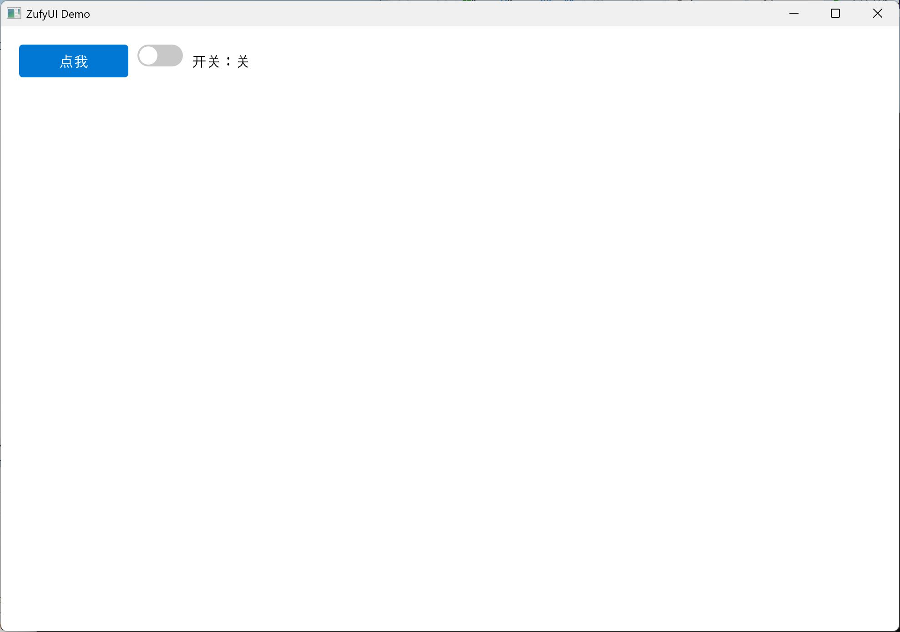
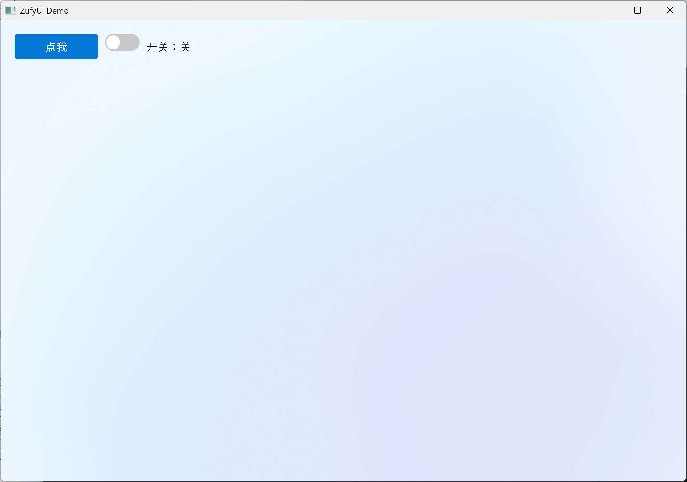
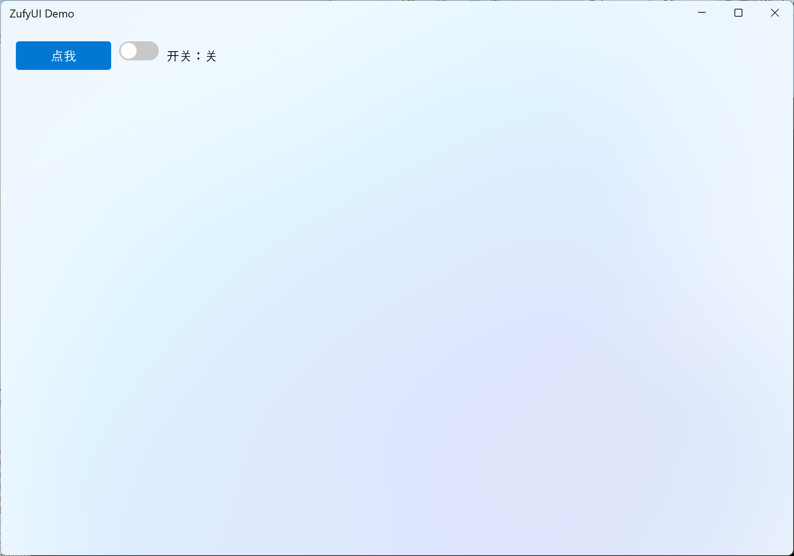
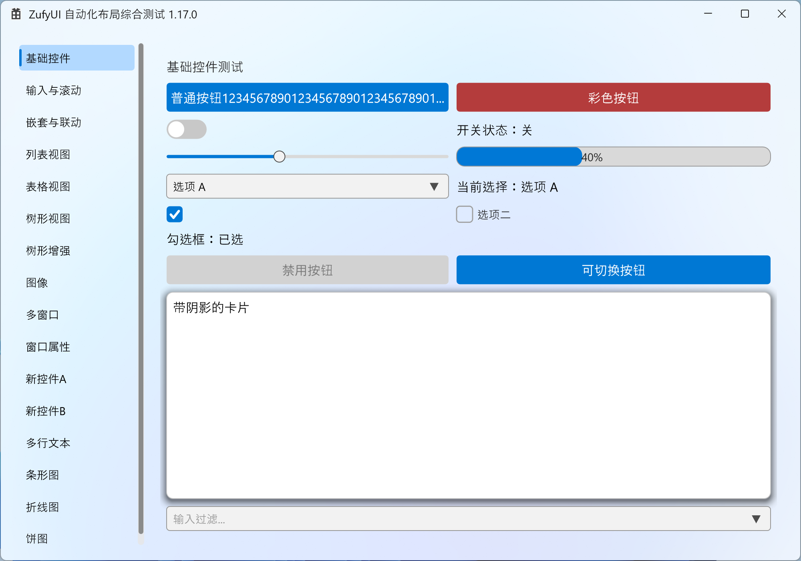

# ZufyUI
> **项目已更名：原名 `ZUI` → 现名 `ZufyUI`**（避免与其它同名项目冲突）。旧的仓库地址会由平台自动跳转到新地址（见下方链接）。
> 基于 Direct2D 的 C++ 原生 Win32 自绘 UI 框架，含布局、控件、信号槽与高 DPI 适配。
> 语言：**简体中文** · [English](README.en.md)
ZufyUI 是一个**纯头文件**的 Windows 桌面 UI 框架，直接建立在 Direct2D / DirectWrite / DWM 之上。它不依赖 Qt、MFC 或任何第三方库，把控件、布局、动画、字体、数据视图和信号槽都装进几个 `.h` 里，适合想要轻量、可控、现代观感的原生 C++ 应用。
- 仓库：GitHub <https://github.com/zhc9968/ZufyUI> · Gitee <https://gitee.com/zhc9968/ZufyUI>
- 许可证：MIT
- 在线文档：<https://zhc9968.github.io/ZufyUI/>
- API 参考：<https://zhc9968.github.io/ZufyUI/docs/API.html>
> ⚠️ **独立渲染线程（编译开关 `ZUFYUI_RENDER_THREAD`）为实验特性，默认关闭、不稳定、bug 较多、不建议开启。** 详见 API 参考「独立渲染线程」一节。
## 特性
- **Direct2D 自绘**：硬件加速渲染，亚克力（Acrylic）背景、圆角、阴影，观感现代。
- **完整布局系统**：`ColumnBox` / `RowBox` / `GridLayout`，支持间距、拉伸权重、填充、对齐与跨行跨列。
- **信号槽**：内置 `ZSignal` / `Connection`，支持 `Connect` 自动管理生命周期，以及当前线程 / 新线程 / UI 线程三种分发策略。
- **丰富控件**：标签、按钮、文本框、下拉框、开关、滚动容器、进度条、滑块，以及列表 / 表格 / 树三种数据视图。
- **图表**：`BarChart` / `LineChart` / `PieChart`（横向方向、面积填充、滚轮缩放、实时刷新），来自 `ZufyUICharts.h`。
- **拖放**：内置 OLE 拖放（`ZufyUIDragDrop.h`），支持拖入文本 / 文件 / 自定义格式，并可把文本 / 图片 / 文件拖出到资源管理器；文本框、下拉框、图片、按钮、标签均已接入；支持元素级与**整窗级**接收（`Window::SetDropTargetEnabled`）。
- **卡片组件**：可折叠卡片 `Expander`（缓动 + 箭头旋转 + 标题悬停高亮 + `SetIcon` 标题图标）、设置行列表 `SettingsList`；图片展示用 `Label::SetImage` + `SetImageFit`（等比缩放完整可见，可拖出）。
- **完整动画与转场**：悬停、展开、指示条、页面切换（`PageHost`）都有内置动画，滚动支持平滑滚动。
- **高 DPI 适配**：自动感知 DPI，`Snap()` 把绘制吸附到物理像素，避免模糊。
- **IME 兼容**：文本框支持中文输入法组合输入与候选框定位。
- **离屏缓存**：元素可自动缓存绘制结果，减少重复绘制开销。
- **系统集成**：托盘图标（悬停/点击/右键/徽章/气泡通知）、任务栏（进度 / 覆盖徽章 / 缩略图工具栏）、跳转列表，以及**应用身份（AUMID）自注册**（统一 toast / 分组归属；需显式授权宏）。
## 环境要求
| 项 | 要求 |
| --- | --- |
| 操作系统 | Windows 10 / 11 |
| 编译器 | Visual Studio（**任意工具集均可**，需 **C++20** 及以上） |
| Windows SDK | 10.0 及以上 |
| 源文件编码 | **UTF-8 带 BOM**（不然 MSVC 会按本地代码页解析中文注释导致编译报错） |
| 运行库 | 系统自带 `d2d1` / `dwrite` / `dwmapi` / `imm32`（无需额外安装） |
| 第三方依赖 | 无 |
## 构建
1. 用 Visual Studio 打开解决方案 `ZufyUI.slnx`；
2. 选择配置 **Release | x64**；
3. 生成解决方案（Build Solution）；
4. 产物位于 `x64\Release\ZufyUI.exe`，直接运行即可。
命令行构建（需要 MSBuild 在 PATH 中）：
```bash
msbuild ZufyUI.slnx /p:Configuration=Release /p:Platform=x64
```
> `ZufyUI.cpp` 是一个综合演示程序（左侧导航 + 多个测试页），同时也充当框架的“冒烟测试”。真正要做自己的应用时，只需要包含头文件并写自己的 `WinMain`。
## 项目结构
```text
ZufyUI/
├── ZufyUI.h # 核心：类型 / 信号槽 / 字体 / 元素 / 布局 / 菜单 / 窗口
├── ZufyUIWidgets.h # 基础控件：Label / Button / TextBox / ComboBox / ToggleSwitch / ScrollViewer / ProgressBar / Slider
├── ZDataViewer.h # 数据视图：ListView / TableView / TreeView
├── ZufyUICharts.h # 图表：ChartBase / BarChart / LineChart / PieChart
├── ZufyUIWindowTool.h # 托盘 / 自定义标题栏 / 无障碍(UIA) / 调试通道
├── ZufyUIDragDrop.h # 拖放：DragData / DragDataBuilder / Window::BeginDrag / 元素拖放钩子
├── ZufyUI.cpp # 综合演示程序入口（WinMain）
├── ZufyUI.slnx # 解决方案
├── ZufyUI.vcxproj # 工程文件
├── AGENTS.md # 开发原则（含“任何 bug 先找根源再修”的规则）
└── docs/
└── API.md # 完整 API 文档
```
## 快速开始
> 目标：**10 分钟内跑出第一个窗口**，并清楚接下来该看哪一章。按下面的步骤走即可。
**第 0 步：准备（纯头文件，零构建配置）**
- 把 `ZufyUI.h`、`ZufyUIWidgets.h`、`ZDataViewer.h`、`ZufyUICharts.h`、`ZufyUIWindowTool.h`、`ZufyUIDragDrop.h` 所在目录加入**包含路径**即可；**不需要编译任何 .cpp**，也不依赖第三方库。
- 依赖的系统库由库内 `#pragma comment(lib, ...)` 自动链接：`d2d1 / dwrite / dwmapi / imm32 / winmm`。
- GUI 程序入口用 **`wWinMain` + `/SUBSYSTEM:WINDOWS`**。
- **⚠ 入口易错**：若坚持写 `int main()`，必须把子系统设成 `/SUBSYSTEM:CONSOLE`，或加 `#pragma comment(linker, "/SUBSYSTEM:WINDOWS /ENTRY:mainCRTStartup")`，否则链接器找不到入口。
**第 1 步：最小窗口 + 一个按钮 + 一个开关**
```cpp
#include "ZufyUIWidgets.h"
using namespace ZufyUI;
int WINAPI wWinMain(HINSTANCE, HINSTANCE, LPWSTR, int) {
Window win;
if (!win.Create(1000, 700, L"ZufyUI Demo"))
return 1;
auto root = win.GetRootColumnBox();
root->SetSpacing(10);
auto row = std::make_shared<RowBox>();
row->SetSpacing(10);
auto btn = std::make_shared<Button>(L"点我");
btn->Connect(btn->Clicked, []() {
MessageBoxW(nullptr, L"Hello ZufyUI!", L"提示", MB_OK);
});
auto toggle = std::make_shared<ToggleSwitch>(false);
auto state = std::make_shared<Label>(L"开关：关");
toggle->Connect(toggle->Toggled, [state](bool on) {
state->SetText(on ? L"开关：开" : L"开关：关");
});
row->AddChild(btn);
row->AddChild(toggle);
row->AddChild(state);
root->AddChild(row);
win.Run();
return 0;
}
```
要点（每一步都在做什么）：
- `Window::Create` 会创建窗口、初始化 Direct2D、应用背景并生成一个默认的根 `ColumnBox`（margin 20、spacing 10）；
- 控件用 `std::make_shared<T>()` 创建，`AddChild` 挂到布局上；**父容器用 `shared_ptr` 拥有子元素**；
- 用 `Connect(信号, 槽)` 绑定事件，连接会随控件析构自动断开；
- 最后 `win.Run()` 进入消息循环；所有窗口/控件都在**同一 UI 线程**创建与操作。
- **⚠ 单位**：坐标与尺寸都是 **DIP**（不是物理像素），框架自动做 DPI 吸附，你不必自己换算。
运行效果（就是上面这段代码）：

**第 2 / 3 步：换个背景、换个标题栏**
**第 2 步：换个背景。** 只有三个背景层可选——`无 / 亚克力 / 云母`，背景层之上再叠一个带 Alpha 的颜色：
```cpp
win.SetBackdrop(Backdrop::Mica, 0x00000000); // 云母 + 全透明叠加色
```

**第 3 步：自定义标题栏。** 换个标题栏（顺带换成云母背景，标题栏更明显）：
```cpp
#include "ZufyUIWindowTool.h" // DefaultTitleBar 在这里
auto bar = std::make_shared<DefaultTitleBar>();
win.SetCustomTitleBar(bar);
win.SetBackdrop(Backdrop::Mica, 0x00000000); // 顺带换成云母
```

更多控件的总览（主示例程序首屏）：

**第 4 步：接下来看什么**
- 布局与控件总览：[API 参考 · 布局系统 / 基础控件](docs/API.md)
- 数据界面（列表 / 表格 / 树）：API 参考「数据视图」章
- 画图表：API 参考「图表」章（`BarChart` / `LineChart` / `PieChart`）
- 窗口周边（标题栏 / 托盘 / 系统对话框）：API 参考「窗口周边」章
- 无障碍与调试/自动化：API 参考「无障碍与调试通道」章
**务必记住的三件事**
1. **DIP**：所有尺寸/坐标都是 DIP，不用管 DPI。
2. **`shared_ptr` 即所有权**：控件用 `make_shared` 拥有、`AddChild` 挂父；丢掉唯一的 `shared_ptr` 就等于销毁。
3. **入口/子系统**：`wWinMain` + `/SUBSYSTEM:WINDOWS`（或按上面的“入口易错”处理）。
## 更新日志
### 2026-10-06 — 文档与配图更新（v1.18.1）
- 重截并更新 README「快速开始」配图（`quickstart` / 背景 / 自定义标题栏 / 总览）。
- README 第 3 步示例补上云母背景（`SetBackdrop(Backdrop::Mica, ...)`），让自定义标题栏更明显。
- 新增 `docs/diagrams/`：截图程序 `screenshots.cpp` + 配图清单（含文字版“示意图”，尽量不画图）。
- 库版本宏更新为 `1.18.1`。
- 版本 **1.18.0 → 1.18.1**。
### 2026-10-05 — 图表控件（BarChart/LineChart/PieChart）+ 多行编辑器 TextEdit + 修复与文档重整（v1.18.0）
**新增：图表（新头文件 `ZufyUICharts.h`）**
- `ChartBase`：数据/多系列、Nice 刻度、类别轴、网格、图例、调色板、内部滚动条、吸附轴、Ctrl 缩放、拖动平移、进场动画、水平/竖直参考线；`UpdateSeriesValues` 实时更新**不重播**进场动画。
- `BarChart`：分组 / 堆叠 / 百分比堆叠 / 重叠、**横向方向**、每柱配色、选中高亮、描边、圆角；`SetFitPlotSize` 让值轴铺满控件。
- `LineChart`：直线 / 平滑 / 虚线、标记点、面积填充（基线夹在可见范围内）、悬停/点击。
- `PieChart`：饼图/环形、标签+引导线、图例、悬停弹出、整圆扫入动画、**滚轮缩放**（`SetZoom`）。
- 详见 API「图表」章。
**新增：多行编辑器 `TextEdit`（`ZufyUIWidgets.h`）**
- `QPlainTextEdit` 风格：行号、换行（`WrapMode`）、Tab 缩进、跨行选择、剪贴板、撤销/重做、查找、只读富文本（`TextRun`）；自动伸缩内部滚动条；IME 候选框定位；`UseCache()=false`。
- 基类新增 `UIElement::AcceptsTab()`（多行编辑器吞 Tab 做缩进，而非切换焦点）。
**修复**
- **高频切页内存抖动增长**：`PageHost` 隐藏页缓存改**延迟释放**（隐藏约 1.2s 后才释放、整棵子树递归；期间切回复用），不再“建位图→删位图”抖动式增长。新增 `UIElement::ReleaseDeviceResourcesRecursive()`。
- **滚动条扩张/收缩时视图不刷新**：`ScrollBar` 动画进度变化时同时重画宿主。
- **空闲 2 秒等待缩小期间折线图不刷新**：不再把“空闲缩小倒计时”当作活跃动画（否则整窗被顶进动画模式、数据重绘不落屏）；空闲缩小改为惰性（到点后由下一帧触发）。
- **`ScrollViewer` 离屏缓存**：改为 `UseCache()=false`（内容常变/可滚动，缓存无益且占大位图）；`SetUseCache(false)` 现在会立即释放已有位图。
- `Snap` 的 DPI 上下文在 UI 线程也设置（`Window::Create` / `WM_DPICHANGED`），修非 100% DPI 下命中测试与渲染吸附不一致。
- `ZSignal::Fire` 异常安全（RAII 守卫）；`TextBox` shift+点击自锚点扩展；`TextEdit::SetCursorImpl` 去重复语句；`Slider` 0 宽 NaN 守卫；`ListView` 池标签宽度变化重测（修省略号错位）。
**文档**
- **API 文档按“使用分类”重整**（中英）：新增「图表」「无障碍与调试通道」「版本变化摘录」「易错点总表」「附录」等；全文加入 **`易错`** 与 **`版本`** 标注。
- 版本 **1.17.0 → 1.18.0**。
### 2026-10-04 — UIA 无障碍 + 外部调试通道 + 布局拉伸权值 + 若干修复（v1.17.0）
**无障碍（UI Automation，`ZufyUIWindowTool.h`，默认开启）**
- `Window::SetAccessibilityEnabled`（默认 true）：窗口经 `WM_GETOBJECT` 暴露 UIA provider（`IRawElementProviderSimple/Fragment/FragmentRoot`）。
- `UIElement` 无障碍 API：`SetAccessibleName/Description/AutomationId/Role`、`GetAccessibleName/Role`、`GetAccessibleChildren`、`IsAccessibilityIgnored`、`GetAutomationIdOrAuto()`（未设时自动 `e{n}`）。
- 控件按角色暴露 Pattern（Invoke / Toggle / Value / RangeValue / ExpandCollapse）；`AccessibilityNotify*` 主动上报；`SetText/SetChecked/SetOn` 已自动上报属性变化。`AccessibleRole` 枚举。
- `Window::GetFocusedElement/GetHoveredElement/GetPressedElement/FocusElement/HitTestElementDIP/ForgetAccessibleElement`。
**外部调试 / 自动化通道（`ZufyUIWindowTool.h`，默认关闭）**
- `ZufyUI::SetDebugEnabled(bool)` / `IsDebugEnabled()`：开启后目标窗口响应 `WM_COPYDATA`（`dwData = 0x5A554631`），回包发回 `wParam`。库**不做文件读写**，只返回当前帧信息。
- 命令：`1 Ping / 2 ListWindows / 3 GetFrameStats / 4 GetElementTree / 5 ForceRepaint / 6 SetElementText / 7 InvokeElement / 8 FocusElement / 9 GetElementInfo / 10 GetElementAt / 11 Highlight / 12 ClearHighlight / 13 GetErrors / 14 ClearErrors / 15~18 Top-N（重绘/布局/缓存/绘制）/ 19 ResetCounters / 20 SetVisible / 21 SetMargin / 22 SetHighlightColor`；高亮框颜色可配（默认绿）。
**布局拉伸权值**
- `ColumnBox` / `RowBox` 按子元素**拉伸权值**分配剩余空间（`SetVerticalStretchWeight` / `SetHorizontalStretchWeight`，或 `SetFillHeight` / `SetFillWidth` 参与）；不再用类型默认权值判定。
**其它**
- 省略文本自动 ToolTip：`Label`（Ellipsis 截断时）悬停显示完整文本，`Button` 委托内部 Label。
- 自定义标题栏：`CaptionButton::Kind::Pin`（客户端可切换按钮，置顶）+ `TitleBar::AddCustomButton`。
- `TreeView`：`TreeNode::bgColor` 行背景色 + `GetScrollOffsetY/SetScrollOffsetY`。
- `Window::DefaultBackdropColor` 默认纯白（`0xFFFFFFFF`）。
- 版本 **1.16.0 → 1.17.0**。
### 2026-10-03 — 渲染线程默认关闭 + 系统对话框（文件/文件夹/颜色）+ 稳定性修复（v1.16.0）
**独立渲染线程改为默认关闭**
- `ZUFYUI_RENDER_THREAD` 默认 **`0`**（单线程 `WM_PAINT`，稳定）；该机制目前**不稳定、bug 较多**（弹窗空白、悬停/hover 与嵌套页面切换延迟、大数据量偶发崩溃等），**不建议开启**；仅在确需 vblank 级顺滑且能承担调试成本时置 `1` 试用。README / API 文档已注明。
**新增系统对话框（`ZufyUIWindowTool.h`）**
- **文件/文件夹**：`FileDialog`（新版 `IFileOpenDialog` / `IFileSaveDialog`）——支持**类型过滤**（`FileFilter` 多组）、**多选**、**选文件夹**、**另存为**、初始目录 / 默认名 / 默认扩展名；`Open` / `OpenFiles` / `PickFolders` / `Save` + `*One` 便捷版 + `FilterLabels`。
- **颜色**：`ColorDialog::Pick(owner, initial, opts)`（`ChooseColor`），支持预置自定义色。
- **可选宏** `ZUFYUI_ENABLE_COMCTL_V6`：定义后本库注入 Common Controls v6 的 manifest 依赖（`ChooseColor` / `MessageBox` 等主题化）；因 manifest 是**应用级**的，**默认不开**，由应用自行决定。
**稳定性 / 正确性修复**
- 渲染线程结构修复：`Present1` 移出 `renderLock_`（`gpuLock_` 护交换链/设备资源）；`PageHost` 过渡态 / `pages_` 变更统一加锁；弹窗首次显示 `RenderNowSync` 同步出帧；新增库内错误信号 `UIZSignals::Error`（菜单/窗口/合成后端创建失败会上报，不再静默）。
- **光标**：新增"期望光标"跟踪，`WM_SETCURSOR` 按悬停元素回设，修控件自设光标被反复重置导致的闪烁。
- **悬停穿透**：有菜单打开或模态屏蔽时，主窗口元素不再悬停。
- **TreeView 首列**：空间不足时依次隐藏 图标 / 勾选 / 三角，并把文字起点压回列内、文本以**省略号**显示（不再整条消失）。
- **TrayIcon**：回调消息号不再与 `WM_RENDER_TICK` 撞号；`MenuWindow` 创建失败不再静默。
- 版本 **1.15.0 → 1.16.0**。
### 2026-10-03 — 数据视图虚拟化 + 跨线程并发收口（v1.15.0）
**数据视图（ListView / TableView / TreeView）虚拟化**
- 改为**按视口虚拟化**：只对可见行创建 / 布局 / 绘制单元格（池化复用 Label），**百万级数据**不再因行数爆炸。`ListView` / `TableView` 新增：
- **隐藏**：`SetItemHidden` / `IsItemHidden` / `ClearHidden`；
- **筛选**：`SetFilter(pred)`（谓词按源行号）/ `ClearFilter`；
- **可见序排序**：`SetViewComparator` + `SortView` / `ClearViewSort`；
- **两套坐标**：`VisibleCount` / `SourceOfVisible` / `VisibleOfSource` / `TextAtVisible` / `SetSelectedVisible` / `GetSelectedVisible`（可见序），其余既有 API 一律**源行号**。
- `ListView` 数据 API 统一为 **`*Item*`**（`SetItemCount` / `SetItem` / `AddItem` / `SetItemHidden` / `SetItemToolTip` / `GetItemText` 等），移除重复的 `*Row*`。
- `TreeView`：新增 **`BeginUpdate` / `EndUpdate`**（批量重建可见列表，消除逐个 `AddRoot/AddChild` 的 O(N²)）、**`SetNodeText` / `GetNodeText`**（按列写文本，空列自动补 Label）、**`SetNodeTooltip` / `GetNodeTooltip`**。
- **`GetChildren` 纯读化**：所有容器的子元素列表统一在「更新阶段」由 `RefreshChildren()` 重建，`GetChildren()` 只读——render 线程不再于渲染期改元素树。
**跨线程并发收口（独立渲染线程 架构 B）**
- **窗口析构 UAF 根治**：引入脱离 `this` 内存的**生存令牌**（`alive` + `inFlight`）；render 线程批处理前先 pin，析构置 `alive=false` 并**等 `inFlight` 归零**（`condition_variable`，不烧 CPU）后才拆卸。
- `ComboBox` / `TabView` / `TreeView` 等**输入与数据变更**统一持 `renderLock_`；补 `Window::OnMouseUp` 锁（修 `UpdateHover → OnMouseEnter/Leave` 的 hover 动画字段竞态）。
- `g_imageDeviceEpoch` / `frameRateLimit_` / `windowId_` 改**原子**；`AppCore` 窗口注册表加 `shared_mutex`；`WM_SIZE` resize 请求打包成 64 位原子；`~UIElement` 从待重绘集合反注册；字体缓存改**事件驱动**（`GetFontFormat` 快路径无锁，不再每帧拷贝 `wstring`）；`ComboBox::overlayConn_` 断连改由 UI 线程执行。
- **丢帧修复**：`renderRequested_` 在帧处理完后清除，并补偿一次唤醒，消除「去抖窗口丢唤醒 → 多等一帧到 WM_TIMER」。
**ComboBox 修复**
- 下拉**几何统一**（`UpdateListGeometry`，UI 与 render 共用）：命中区 / 箭头方向不再用「上一帧」的值。
- **禁用状态跨过滤持久**（内部按源索引存储）；新增源索引选中 API `SetSelectedSourceIndex` / `GetSelectedSourceIndex` / `SourceIndexOf`。
**其它修复**
- `TreeView`：`Clear()` 清可见索引映射；`GetNodeAtY` 表头不再误判；`VK_UP/DOWN` 首末回绕；列布局改用版本号判断（不再每帧算列签名）；`rootDecorated_=false` 时根节点箭头与命中区保持一致。
- `TabView`：`AddTab/InsertTab/RemoveTab/ClearTabs` 在选中变化时补发 `SelectionChanged`。
- `TextBox::Copy/Paste` 用所属窗口 `HWND` 打开剪贴板。
- 版本 **1.14.2 → 1.15.0**。
### 2026-10-02 — 修复 A1「双驱动」占用翻倍 + A3 帧率上限（v1.14.2）
- **修复（关键）**：A1 的 vblank tick 与旧的 `WM_TIMER → HasRenderWork → InvalidateRect → WM_PAINT` 在动画期间**同时驱动**，各触发一次 `AdvanceFrame + RequestRender` → **每 vblank 可能出两帧 → GPU/CPU 翻倍**（这就是"稳了但更耗"的根因）。现**动画期间 `WM_TIMER` 让位给 tick，不再插 `InvalidateRect`**；非动画期（tooltip / 标题轮询 / 一次性重绘）仍走 `WM_PAINT`。
- **A3 帧率上限**：`Window::SetFrameRateLimit(fps)` / `GetFrameRateLimit()`，静态 `Window::SetDefaultFrameRateLimit(fps)` / `GetDefaultFrameRateLimit()`。**`0` 或未设 = 跟随显示器刷新（默认，不改变现状）**；`>0` 限制动画平均出帧率。实现用 `detail::NowMs()`（QPC 单调毫秒）+ `detail::PreciseSleepMs()`（高精度 waitable timer，不可用退化 `Sleep`），在合成前补齐间隔。demo 加了 `win.SetFrameRateLimit(0);`（改成 `60` 即可测降占用）。
- 版本 **1.14.1 → 1.14.2**。
### 2026-10-02 — A1 帧节拍：动画续帧去 WM_PAINT 往返（消 120/60 抖动）+ 恢复不定态 ProgressRing 演示（v1.14.1）
- **A1 帧节拍（`ZUFYUI_VBLANK_CLOCK`，默认 1）**：动画续帧不再走 `ContinueFrame → InvalidateRect → WM_PAINT`——WM_PAINT 只在队列无更高优先级消息时才合成，会被输入消息推迟，**帧开始时刻方差大 → `120↔60` 抖动**；改为渲染线程直接 `PostMessage(WM_RENDER_TICK)` 让 UI 线程跑 `AdvanceFrame()`（从 `OnPaint` 抽出的「布局 + 动画 + 收集活跃动画」），并用 `frameTickPending_` 去抖防积压。置 0 回退 v1.14.0 行为。
- 抽出 `Window::AdvanceFrame()`，`WM_PAINT` 与新的 tick 共用；`DwmFlush` 节拍不变（present 仍对齐 vblank）。
- **恢复 demo「新控件B」页的不定态 `ProgressRing`（持续旋转）**——v1.14.0 阶段 0 误删（那是功能演示，不是临时诊断件）。
- 版本 **1.14.0 → 1.14.1**。
### 2026-10-02 — 独立渲染线程（架构 B）+ 悬停重绘优化（v1.14.0）
**独立渲染线程（架构 B）**
- **渲染从 UI 线程剥离**：新增进程级 render 线程负责**合成 / `Present1` / `DwmFlush`(vblank) 节拍**；UI 线程只做消息、输入、布局、动画，并用**去抖**的 `RequestRender()` 标脏唤醒 render。
- **共享设备、各用各的上下文**：`ID2D1Device` 与 DComp / 交换链在 UI 线程建；render 线程自建自己的 `ID2D1DeviceContext`；元素缓存从 `ID2D1BitmapRenderTarget` 改为 **device 作用域的 `ID2D1Bitmap1`**（两遍式：先在独立 DC 把脏缓存画好，主帧只 blit），跨 DC 共享成立。
- **跨线程正确性**：DC 操作段用 `renderLock_` 串行（节拍在锁外，UI 不被卡帧）；`WM_SIZE` 只置 pending、由 render 线程锁内 `ResizeBuffers`；`WM_DPICHANGED` 持锁串行重建；device lost 走「render 检测 → 暂停 render → 回 UI 线程重建 → 恢复」；最小化不出帧。
- 编译期开关 **`ZUFYUI_RENDER_THREAD`（默认 `1`）**；设为 `0` 退回原单线程 `WM_PAINT` 路径。
**悬停重绘优化（降 CPU）**
- 修「在按钮列表（`ListView`）空白处移动鼠标也持续占 CPU」：根因是 `ListView::OnMouseMove` **每次移动都无条件 `RequestRepaint()`**（不管悬停项是否变化、是不是空白）→ `pendingRepaint_` 恒非空 → 每帧整窗重合成。
- 同类修复 `ComboBox` 下拉、`DataViewer` 网格、`TreeView`：**只在悬停状态真的变化时**才重绘（悬停高亮行为不变）。
**健壮性**
- `TabView` / `ProgressRing` / `SplitView` 的 `Draw` 增加 `arrangedRect_` 非有限值守卫，避免布局未就绪 / 退化尺寸触发 Direct2D 几何断言。
- 版本 **1.13.0 → 1.14.0**。
### 2026-10-01 — 菜单重构：弹出层继承 Window（根治每次 +90MB）+ 窗口底层开放
**菜单（重要架构重构）**
- 右键 / 独立 / 子菜单的弹出层改为**继承 `Window`**（`MenuWindowBase : Window` + `MenuWindow : MenuWindowBase`），走 **DComp + 进程级共享 D3D/D2D 设备** —— **根治「每弹一次菜单约 +90MB」**（旧实现是 `WS_EX_LAYERED + UpdateLayeredWindow + DIB + 自建 D2D 工厂/DC 渲染目标`，每个菜单一套软件渲染设备）。
- 柔阴影、圆角、渐显、屏幕边缘避让、点外/Esc 关闭、子菜单延时开/收，全部保留。
- 弹出层 `WM_MOUSEACTIVATE → MA_NOACTIVATE`、`WM_NCACTIVATE → FALSE`（拒绝激活），点击它们不再让主窗口收到伪 `WM_KILLFOCUS`（这是「点菜单项不触发、直接关闭」的根因）。
- `MenuWindowBase` 可继承 → 用户可用它做**自定义浮层**（flyout / 面板）。
**窗口底层开放（新）**
- 创建参数可重写：`GetCreateStyle` / `GetCreateExStyle` / `GetCreatePos` / `WantDwmChrome` / `WantBackdrop`。
- 消息拦截：`OnWindowMessage`（万能入口，返回 true 拦截）+ `OnWindowMessageHandled`（旁路观察）+ `OnWindowClosing`。
- 自绘：`RenderContent(ID2D1DeviceContext*)`；`SetContentOpacity`（整窗不透明度，弹窗渐显）。
- `Window` 现为**可继承**（虚析构 + 上述虚函数）。
**其它**
- 菜单键盘：`↑/↓/Home/End`、`Enter`、`Esc`、`←/→` 子菜单、菜单项快捷键（`Ctrl+C` 等）；`Tab` 关菜单。
- ToolTip：修「文字画到框外」（布局宽/高夹到渲染目标范围 + 省略号 + 截断裁剪）。
- **修复崩溃**：菜单项回调里弹模态框（`MessageBox` 等）导致的 use-after-free —— `Window::WndProc` 加**自毁保护**（`HandleMessage` 期间窗口对象可能被析构，之后只按 HWND 判断、不再碰 `self`）；菜单项回调**延迟到本帧消息处理之后**再触发（`detail::PostToUIThread`，`shared_ptr` 保活），彻底避开"在消息栈内被析构"。
**数据视图 / 文档（v1.10.0）**
- 数据视图新增坐标换算辅助 `ContentToLocalX/Y` + `LocalToContentX/Y`（把散落的 `arrangedRect_.x - Snap(scrollOffsetX_)` 收敛到一处）。
- 核对确认：数据变更方法（`SetRowCount` / `SetColumnCount` / 增删行列 / `SetItem` / `AddItem`…）内部均已自动 `InvalidateLayout` + `RequestRepaint`；容器 `AddChild`/`SetParent` 自动标脏——**无需手动 `MarkChildrenDirty`**。
- 文档补充「窗口生命周期与语义」（`Show` / `RunModal` / owned / `shared_ptr`）。
- 版本 **1.9.6 → 1.10.0**。
**内部健壮性 / 性能（v1.10.1）**
- **进程级 DPI 感知**改到静态初始化阶段（早于 `main`、早于任何窗口）——原先放在 `Window::Create` 里、且忽略返回值，若进程先建过别的窗口就会静默失败、全进程坐标皆错。
- `Window::Create` 增加 `x` / `y` 位置参数（默认 `CW_USEDEFAULT`；未传时仍可由 `GetCreatePos` 覆盖）。
- `ListView` 子元素缓存改用**逐字段比较**——原来的浮点 key（`项数×1e6 + 行高×1e5 + …`）字段区间本身就会重叠，上万项时丢精度必撞。
- `TreeView::TreeNode::parent` 改 `std::weak_ptr`（弱引用断环），勾选沿父链直接 `lock()`，去掉每层一次 `FindNode` 的全树搜索（原 O(n·d)）。
- 系统噪点贴图缓存 **module 句柄 + 解码后的 WIC 位图**：DPI 变化不再重复 `LoadLibrary` + WIC 解码。
- `ImageDeviceCache::Get` 把 GPU 上传（`CreateBitmapFromWicBitmap`）移出锁（双检）。
- `ComboBox` 展开列表改**按需连接**全局 `DrawOverlay`：未展开的 ComboBox 不再每帧空跑。
- `Label::Draw` / `Label::MeasureOverride` 走 `FontManager` 布局缓存（缓存 key 增加**对齐 / 行距 / 多行**；Ellipsis 的截断结果按**原文本**缓存，命中即跳过整段截断计算）。最高频控件路径，表格里放大收益。
**稳定性修复（v1.10.2）**
- **文本布局缓存返回值从裸指针改为强引用 `ComPtr`**。`GetRawLayout` / `GetDisplayLayout` / `GetStyledLayout` / `GetStyledDisplayLayout` 之前返回缓存内部的**裸借用指针**，而有界 FIFO（上限 400、一次淘汰 1/4）可能在"取到指针"与"使用"之间把条目释放 → 悬垂（大规模表格 + 高频刷新时表现为 `Label::MeasureOverride` → `GetMetrics` 的访问冲突）。现在调用方持有强引用，条目即使被淘汰、对象也不会失效。
- `FontManager` 的工厂初始化、`formatCache_`、`layoutCache_` / `layoutFifo_` 统一加 `std::mutex` 保护（防御未来可能的跨线程调用）。
**稳定性 / 健壮性修复（v1.10.3）**
- **`MenuWindow` 资源泄漏**：其画笔 / 文本格式 / 描边样式是裸指针成员（不走 `rootElement_` 链），每次打开菜单都会漏一套 D2D/DWrite 资源；新增 `~MenuWindow()` 显式 `Release()` 全部。
- **`UIElement::SetParent`**：解绑到 `nullptr` 时旧父的 `childrenDirty_` 不置脏 → 旧父子元素列表缓存不失效；现在旧父、新父都置脏。
- **`UIElement::AttachWindowRecursive`（基类）**：默认递归 `GetChildren()`，修复普通控件被移动后子树 `windowId_` 不更新的问题（此前只有容器 override 才递归）。
- **`WndProc` 自毁保护**：判据补充 `GWLP_USERDATA == self`，并在 `WM_NCDESTROY` 清空 `GWLP_USERDATA`，覆盖 HWND 号被复用的情形。
- **`TableView` / `TreeView` 子元素缓存**：列宽校验从"列宽总和"改为**顺序敏感哈希**，修复交换两列宽度后缓存不失效（单元格文字停在旧位置）。
**新增控件 / 滚动条抽离（v1.11.0）**
- **图标系统 `FontIcon` + `Icon`**（新头 `ZufyUIIcons.h`）：**枚举值即字体码点**；Win11 `Segoe Fluent Icons` / Win10 `Segoe MDL2 Assets` 运行期自动回退；字形 layout 走 `FontManager` 全局缓存。
- **`TabView` 页签**：顶部横向紧凑页签（文字居中 + 选中浅蓝底 `#D6E8FB` + 下划线指示器 + 悬停 + 圆角边框）；可选关闭 ×（悬停变深色）；内容用内建 **`PageHost`** 托管 → 切换**复用过渡动画**；溢出时出现 **◀/▶ 按钮**（按能否再滚显隐）+ **底部横向滚动条**；滚轮只在页签条上滚动页签；关闭页签时后续页签**平滑移动**。
- **`RadioButton` + `RadioGroup`**：圆形单选；**组内互斥**（显式成组，不靠父容器推断）、**横/纵**两种方向、**组整体键盘导航**（自动跳过禁用项）、选中**整行浅蓝底 + 左侧竖条**；`SelectionChanging` 可否决、`SelectionChanged` 信号 → 支持自定义互斥/联动。
- **`ScrollBar` 抽成独立可复用控件**（从 `ScrollViewer` 提炼）：自带**悬停扩张 + 空闲缩小**（默认 2 秒缩成细线）、**回调式**数值（拖动跟手 / 点轨道平滑）；`ScrollViewer` 与 `TabView` 共用同一个类。
**新增控件 / 体验（v1.12.0）**
- **`ProgressRing` 环形进度**：确定值（弧 + 值变化缓动）/ 不确定值（头部每周期整整 2 圈 + 弧长呼吸，**不跳变、尾端不倒走**）。
- **`NumberBox` 数字输入 / Spinner**：内部 `TextBox` + 字符过滤 + **关闭 IME**；右侧（**框内**）叠上/下步进与**清除 ×**（值 ≠ 默认值时出现，点击恢复默认值）；**空文本 → 错误**（**控件自身行为**）；`ValueChanged`（提交）/ `TextChanged`（实时校验）；超范围提交时夹到 `[min,max]`。
- **`SplitView` 两栏分栏**：可拖动分隔条（圆角 + 悬停高亮）；拖动**只重新标记两栏**（不是重排整个控件）；两栏各自按**出血**裁剪（`SetClipRect(栏矩形 ± bleed)`）；多栏用**嵌套**实现。
- **`TextBox`**：新增**底部蓝色指示器**（替换下边框、与圆角融合）、**错误态**（`SetError`，整体变红、**边框粗细不变**）、**IME 开关**（`SetImeEnabled`）；只读**不显示光标**（仍可选中）。
- **`ScrollBar`**：抽成独立可复用控件；空闲 2 秒缩小、悬停恢复 + 悬停动画。
- **修复**：容器（`LayoutHost` / `SplitView` / `NumberBox`）此前**没有把动画 tick 递归下发给子控件** → 子控件的悬停/翻页等动画不跑；现已补齐。
**帧节奏修复 · 动画丝滑（v1.12.1）**
- **现象**：帧率测着是 60，**肉眼却像 30–40**（"卡卡的"）。
- **根因**：**帧间隔不均匀**（不是帧率低）。`WM_TIMER` 里排队 `InvalidateRect` → `WM_PAINT` 会被鼠标/键盘消息**插队**，帧开始时刻漂移，再被 `Present1(1)` 量化成整 vblank 的错位；叠加定时器（~15.6ms）与 vblank（16.67ms）天生错位 → 周期性微顿。
- **修法（两处，都很小）**：
1. `WM_TIMER` 里改用 **`RedrawWindow(…, RDW_INVALIDATE | RDW_UPDATENOW)`** —— **同步**触发 WM_PAINT，绕过消息队列被插队；
2. `OnPaint` **在 `Present1(1)` 返回后立刻排下一帧**（`InvalidateRect`）—— 让节拍由 **vblank** 决定，而不是定时器。
- **效果**：主观帧率显著变顺，动画接近原生 WinUI。
**右键菜单 / CPU 修复（v1.12.2）**
- **修「主窗口有持续动画时右键菜单完全不出现」**：根因是 **`WM_PAINT` 的检索优先级高于 `WM_TIMER`** —— 主窗口 present 循环每帧发一个 `WM_PAINT`，把菜单窗口的**淡入定时器**和它自己的 `WM_PAINT` 一起饿死 → 菜单永远停在透明度 0（看起来"没弹出来"）。改为**显示时立即置为不透明 + `RedrawWindow(RDW_UPDATENOW)` 同步画一帧**，不再依赖被饿死的定时器。（副作用：菜单**不再淡入**，改为即时出现 —— 为了在持续动画下可靠显示。）
- **降 CPU**：`HasRenderWork()` 去掉「鼠标停在任何带 tooltip 的元素上就恒为 true」的判据 —— 它会让定时器**每 16ms 全窗重绘一次**。tooltip 的 500ms 延迟与渐显本来就由定时器里的 `UpdateTooltip()` 推进，不需要靠"重绘"驱动。
- **降 GPU**：不再把整棵「活跃动画集合」（一个转圈圈会带出十几个祖先容器）每帧塞进 `pendingRepaint_` —— 实测那会导致整窗每帧重新合成（约 10% GPU）。
- **帧节奏**：`WM_TIMER` 回到 `InvalidateRect`（去掉上一版的 `RDW_UPDATENOW` 同步画），避免与 present 驱动**叠成"每帧画两遍"**、还堵消息泵；present 驱动下一帧的门控从 `HasRenderWork()` 改为「确有动画在跑」，避免自持死循环饿死 `WM_TIMER`（否则 tooltip 不弹）。
- **菜单**：`MenuWindow` 里 `GetFactory` 的 `AddRef` 未配对 `Release`（每次菜单漏一个 factory 引用）；同一子菜单**已展开时不再重复展开**。
- **控件**：`TabView::LayoutStrip` 加**零尺寸守卫**（避免零宽高下的异常排列）；`ProgressRing` 改 `UseCache()=false`（每帧都变，缓存只会白重建一遍）；`NumberBox::ResetToDefault()` 恢复默认后**清除错误态**并触发 `TextChanged`。
- 版本 **1.12.1 → 1.12.2**。
**框架 Timer / Label 图标 / 页签用 Label（v1.13.0）**
- **框架 `Timer`（信号通知）**：`Window::CreateTimer(ms)` → `std::shared_ptr<Timer>`，`Timer::Tick` 是 `ZSignal<>`；底层仍是 `WM_TIMER`，但 **id 用框架保留段（`0x7F00+`）**，不干扰库内部定时器与应用自定义 id；**窗口先析构自动解绑**、Timer 先析构自动 `Stop`+注销。
- **`Label` 内置字体字形图标**：`SetIcon(Icon[,size])` / `SetIconColor` / `GetIcon`（复用原「图片图标」槽位；`size<=0` 跟随字号；颜色默认取文字色；**只设图标无文字 = 纯图标标签**）；「图标 + 文本(+子控件)」作为**一个整体**做左右对齐（按钮里图标与居中文字贴在一起）。
- **图标系统下沉到核心**：`Icon` / `IconGlyph` / `IconFontFamily` 从 `ZufyUIIcons.h` 移到 **`ZufyUIWidgets.h`**，任何控件都能直接用；`FontIcon` / `MakeFontIcon` 仍在 `ZufyUIIcons.h`。
- **`Button` 转发图标**：`SetIcon` / `GetIcon` / `SetIconColor`（转发给内部 `Label`）。
- **`TabView` 页签标题改为 `Label`**：`AddTab(shared_ptr<Label>, …)` / `SetTabLabel` / `GetTabLabel`（`wstring` 重载保留为便捷写法）→ 页签天然支持图标。
- **`ScrollBar::ShrunkWidthRatio`**（默认 `0.30`）：宿主据此留边；`TabView` 的「标签条 ↔ 内容」间距改为「细线粗细」。
- **帧循环改进**（针对「动画期间定时器/弹窗被饿死」）：present 自续前先**派发到期的 `WM_TIMER`**（修定时轮询不准时）；并新增**让位闸门** `HasSiblingWindowNeedingPaint()`（`EnumThreadWindows` + `GetUpdateRect` 精确判据）——本线程若有其它窗口正等着出画，本轮**不给自己排帧**，避免其重绘被无限期推迟。
- **菜单打开淡入恢复**（`ShowAtPoint`：先同步画一帧把内容渲染出来，再 `SetContentOpacity(0)` + 淡入；WM_TIMER 不再被饿死）。
- 版本 **1.12.2 → 1.13.0**。
### 2026-09-26 — 托盘 / 任务栏 / 菜单增强 + 应用身份自注册
**菜单**
- 重做右键菜单为**分层窗口 + 自绘柔阴影 + 圆角 + 渐显**；修复「第二次弹不出」（根因：勾选对勾的 `ID2D1StrokeStyle` 静态跨工厂复用 → `EndDraw` 报 `D2DERR_WRONG_FACTORY`，改为随实例工厂创建/释放）。
- 菜单项增强：`id` / 勾选 / 单选 / 默认项（加粗 + 回车）/ 危险项（红字）/ 快捷键提示 / 禁用；逐项 `bgColor` / `textColor` / `font`；`Menu::font` / `SetDefaultFont`。
- **动态菜单工厂** `UIElement::SetContextMenuFactory`（每次右键现搭）+ `SetContextMenuEnabled`。
- 独立弹出 `Menu::ShowAt` / `ShowAtCursor`（不绑定窗口，托盘菜单用）；开关菜单互斥。
- 悬停高亮改为半透明叠加（自定义底色上仍可见）。
**托盘 / 任务栏 / 图标**
- `TrayIcon`（`Shell_NotifyIcon` v4）：悬停 / 点击 / 右键 / 双击、徽章（自绘合成）、气泡通知（`ShowBalloon`，`BalloonIcon` 可选 None/Info/Warning/Error/Custom，支持实时 / 静音）；`explorer` 重启自动重加。
- 任务栏：进度（`SetTaskbarProgress`）、覆盖徽章（`SetTaskbarOverlayIcon`）、缩略图工具栏（`SetThumbButtons`，`Image` 版自动建 `HIMAGELIST`）、跳转列表（`SetJumpList`，Tasks + 分类 + 最近）。
- `Window::SetAppIcon`（统一原生大/小 + 类图标 + 自定义标题栏）、`ShowActivate`（四模式）、`Flash`（`FLASHW_ALL`）；`TitleBar` 图标徽章 / 进度。
- `Image::ToHICON` / `CopyPixelsBgra`。
**数据视图**
- `ListView::ItemRightClicked(row)` + `GetContextRow()`；`TableView::CellRightClicked(row,col)` + `GetContextRow()/GetContextColumn()`，支持列表/表格右键菜单。
**应用身份自注册（新）**
- 声明 `AppInfo{ displayName, aumid, icon }` + `RegisterApp(...)`（自由函数 / `Application::RegisterApp` 转发）：统一进程 AUMID，让 toast / 跳转列表 / 任务栏分组归属同一身份。
- **需显式授权宏 `ZUFYUI_ALLOW_APP_REGISTRATION`**；授权后写注册表 `HKCU\...\AppUserModelId\<AUMID>`（DisplayName + IconUri）+ 把图标缓存到 `%LOCALAPPDATA%\ZufyUI\AppReg\<AUMID>\app.ico`，**进程退出清理缓存与注册表项**；未授权则只设 AUMID、零副作用。
**构建**
- 引入预编译头 `pch.h` / `pch.cpp`（改 demo 的编译 ~1.1s）；`Release` 关闭调试信息；`Debug` 补 `/bigobj`。
> 已知问题：菜单窗口走「分层窗口 + 软件渲染目标」路径且每个菜单自建 D2D 工厂 → 每弹一次菜单约 +90MB（关闭后数秒回收）。计划改为复用共享设备（菜单走 DComp 路径），修复前请留意。
### 2026-09-20 — 性能优化 + 背景 API 收敛（v1.9.6）
- **性能**：切页内存峰值 300–400MB → **~30MB 封顶**；布局机制重构（DesiredSize 缓存 + 两级脏位，去掉"布局失效即全清缓存"、切页不再全量重排）；拖动/缩放期间不再每帧整树命中检测；**全局文本布局缓存**（跨控件共享）+ `Label` 省略号改二分；去每元素 `GetDpi()`。
- **背景 API 收敛为"背景层三选一 + 叠加色"**：`Backdrop` 只有 `None / Acrylic / Mica`；**删除 `BackdropMode`**；删除 `ReloadAcrylic/ReloadMica`；新增 `SetBackgroundParams(层, BackgroundParams/AcrylicPreset)` 与 `AcrylicParams`/`MicaParams`。亚克力/云母一律由 ZufyUI 自己实现，**Win10 与 Win11 效果一致**。
- **数据控件**：`ListView` 新增 `BeginUpdate/EndUpdate` 批量增删。
- **一批修复**：排序补发 `SelectionChanged`、`ComboBox` 过滤保留选中、`TextBox` 撤销栈、`CaptionButton` 按下行为、滚动条除零守卫、图像缓存加设备代次等。
### 2026-09-19 — 1.8.0 后续修复与完善（v1.8.1）
**背景**
- DComp 亚克力背景层改为**可运行时重建**（新增 `UpdateDCompBackdrop()`）：`SetBackdrop` / `SetBackdropMode` 在窗口创建后再切换也会生效；`Acrylic → Mica/其它` 时会正确清除旧背景层（不再露底/发黑）；设备丢失重建后也会重新挂上。
**窗口**
- 新增 `Window::SetTitle(const std::wstring&)` 与 `Window::SetIcon(HICON bigIcon, HICON smallIcon)`（原生标题栏；自定义标题栏请用 `TitleBar::SetTitle`）。
- `SetCustomTitleBar` 会套用当前 `SetTitleBarVisible` 状态，消除"先隐藏再装栏"的不一致。
**信号（连接）**
- `Connection` 改为 **Qt `QMetaObject::Connection` 风格的被动句柄**：可拷贝、**析构不再自动断连**；`UIElement::Connect(...)` 现在**返回 `Connection`**，忽略返回值安全，需要单独断开时 `auto c = elem->Connect(sig, slot); … c.disconnect();`。自动断连仍由元素的 `ConnectionGroup` 负责（`ImageManager` 的 DeviceReset 订阅同样改走 group）。移除冗余的 `autoConnections_`。
**数据视图 / 控件**
- `TableView` 单元格键由 `(long long)row*10000+col` 改为 `(uint64)row<<32 | col`，修列数 ≥ 10000 时键冲突（`cellSel_` / `cellTextColors_` / `cellTips_`）。
- `ListView::MoveItem` 现在会触发 `SelectionChanged`（并 `EnsureVisible`）。
- `ComboBox` 选项宽度加缓存（仅数据变化重算），`SetToolTip` 移出 `Measure`（去每帧测量与副作用）。
- `ScrollViewer` 内容裁到视口（新增 `UIElement::SetClipRect`），不再画到滚动条下面；滚动条本身不受影响。
**其它**
- `PageHost` 新增过渡缓动 `TransitionEasing { Linear, EaseInOut, EaseOut }`，默认 `EaseInOut`（缓入缓出，平滑）；`SetTransitionEasing` 切换。
- 进程 DPI 感知只设置一次；删除 `D2DERR_RECREATE_TARGET` 死判断。
- **修复内存泄漏**：`AppCore::dqController_` 改用 `ComPtr` 持有并释放。
- demo：移除独立的"自定义标题栏窗口"（主窗口已是自定义标题栏）。
### 2026-09-19 — 渲染迁移到 DirectComposition + 背景/信号 API 重整（v1.8.0）
**渲染：迁移到 Direct2D 1.1 + DXGI flip SwapChain + DirectComposition**
- `Window` 不再使用 `ID2D1HwndRenderTarget`，改为 `ID2D1DeviceContext` + `IDXGISwapChain1`（`CreateSwapChainForComposition`）+ DComp 视觉树，窗口加 `WS_EX_NOREDIRECTIONBITMAP`，内容经 DComp 提交、支持逐像素透明。
- `AppCore` 进程级共享 `ID3D11Device → IDXGIDevice → ID2D1Device` 与 WinRT `ICompositor`，多窗口复用。
- 设备丢失/DPI 变化/尺寸变化走统一的资源丢弃与重建（`DiscardDeviceResources` / `ResizeSwapChain`），并新增 `DeviceLost` / `RenderingError` 信号。
**亚克力：改用 DComp `HostBackdropBrush` + 高斯模糊**
- 亚克力由 DComp 背景层（`ICompositor3::CreateHostBackdropBrush`，回退 `ICompositor2::CreateBackdropBrush`，外包高斯模糊效果）采样宿主背景绘制，配合 `DWMWA_USE_HOSTBACKDROPBRUSH` + `AccentState(HOSTBACKDROP)`；不再依赖会随窗口框架失效的 `DWMWA_SYSTEMBACKDROP_TYPE`。
- 附带手写的 `IGraphicsEffect` / `IGraphicsEffectD2D1Interop` 封装（无需 Win2D），依赖新增 `d2d1effects_2.h` 与 `dxguid.lib`。
**背景 API 重整（表示“要什么” vs “用什么 API”）**
- 新增 `Backdrop { None, Normal, Blur, Acrylic, Mica, MicaAlt }`：表示**要什么效果**。
- `BackdropMode { Auto, System, Accent }`：表示**用什么 API 实现**。
- `SetBackdrop(Backdrop, tint = 0)` / `GetBackdrop()`、`SetBackdropMode` / `GetBackdropMode()`。
- 删除旧的 `WindowBackdrop` / `SystemBackdropMaterial`（含义与命名混淆）。
**回调 → 信号（统一用信号槽）**
- `UIElement` 的事件由裸 `std::function` 成员改为信号：`MouseEnter / MouseLeave / MouseMove / MouseDown / MouseUp / KeyDown / KeyUp / Char / Focused / Blurred`。
- `MenuItem::Clicked`、`CaptionButton::Clicked`（默认行为由 `DefaultTitleBar` 接线，自定义标题栏可自行连接/拦截）。
- 新增 `Window::Closing`（`ZSignal<bool*>`，槽可置 `*cancel=true` 取消关闭，用于“关闭前询问保存”）、`Window::BackdropUnsupported` / `Window::DeviceLost` / `Window::RenderingError`。
- 全局 `UIZSignals::DeviceReset`：渲染设备资源被丢弃/重建时触发，供订阅者清理按设备缓存（`ImageManager` 据此清图像位图缓存，修复旧渲染目标指针悬垂与位图泄漏）。
- 删除 `SetBackdropUnsupportedHandler` / `SetDeviceLostHandler` / `SetRenderingErrorHandler`。
**窗口**
- `Window::Create` **不再自动显示**，何时显示由应用 `Show()` 决定。
- 自定义标题栏新增**每个按钮**的启用/可见控制：`TitleBar::GetButton / SetButtonEnabled / IsButtonEnabled / SetButtonVisible / IsButtonVisible`；`DefaultTitleBar` 便捷封装 `SetMinimizeEnabled / SetMaximizeEnabled / SetCloseEnabled` 及对应 `...Visible`。
- `DWMWA_BORDER_COLOR` 默认改为系统默认（不再硬编码灰色）。
**修复与清理**
- 组合框弹出列表的 hover/点击判定改用与绘制一致的宽度（`ListWidth()`），修右侧超出区域点不到。
- `TableView::SortByColumn` 排序后同步重映射 `checkedRows_`。
- 双击判定改用系统 `GetDoubleClickTime()`（三处）。
- `ScrollViewer::Arrange` 用 `SetVisibleNoInvalidate()` 避免布局循环；`DrawTextWithEllipsis` 截断由 O(n²) 改为二分。
- `MenuWindow` 多显示器定位改用 `MonitorFromPoint` + `GetMonitorInfo`。
- 清理多项兜底/临时逻辑（`PageHost` 调试特例、无用的 `animationIdleFrames_` 等）。
**测试程序（`ZufyUI.cpp`）**
- 主窗口改为**自定义标题栏**。
- 移除独立的小工具窗口，多窗口 / owned / 模态演示移入主窗口的**“多窗口”页**。
- 版本号提升到 **1.8.0**（新增 `ZufyUI_VERSION_STRING` 等宏，demo 标题引用）。
### 2026-09-16 — 自定义标题栏（ZufyUIWindowTool）与背景三模式
**新增：自定义标题栏（新文件 `ZufyUIWindowTool.h`）**
- `TitleBar` / `CaptionButton` / `DefaultTitleBar`：窗口级控件，作为“不参与布局”的覆盖控件由 `Window::SetCustomTitleBar` 安装；传 `nullptr` 恢复原生标题栏。
- 三件套用系统图标字体绘制（`Segoe Fluent Icons` / `Segoe MDL2 Assets`，码位 `E921/E922/E923/E8BB`），带 **hover/pressed 渐变**，关闭悬停红 `#C42B1C`；按钮在 `WM_NCHITTEST` 报告为 `HTMINBUTTON/HTMAXBUTTON/HTCLOSE`，从而启用系统 **Snap Layouts**；点击在 `WM_NCLBUTTONUP` 处理；标题栏区域为**拖动区域**（拖动 / Aero Snap / 双击最大化交给系统）。
- 标题栏与按钮**不参与 Tab 焦点**；默认 `DrawAfterLayout`、`UseCache`（仅状态变化重绘）。
- 便捷设置：`SetTitleBarVisible`、`SetButtonsEnabled`、`SetButtonWidth/Height`、`SetRightMargin`、`CaptionButton::SetAnimationSpeed` 等。
**新增：布局参与 / 拖动机制（`UIElement`）**
- `LayoutParticipation { Normal, DrawBeforeLayout, DrawAfterLayout }`：不参与布局的元素由 Window 在正常布局树**之前/之后**单独绘制；布局与 `ComposeImpl` 子递归都会跳过它们。
- 拖动区域：`SetDraggable / SetDragRegion / CollectDragRegions`；Window 每帧收集并交 `WM_NCHITTEST`（返回 `HTCAPTION`）。
**新增：背景三模式**
- `BackdropMode { Auto, Acrylic, SystemBackdrop }` + `SystemBackdropMaterial { Auto, Mica, MicaAlt, Acrylic }` + `SetBackdropUnsupportedHandler`（运行时不受支持的回调）。
- `SystemBackdrop` 走 Win11 `DWMWA_SYSTEMBACKDROP_TYPE`；不支持时回调并回退 `AccentState`。
**窗口 / 边框修复**
- 分屏（Snap）状态保留 DWM 边框与阴影：`WM_NCCALCSIZE` 只内缩**被吸附到工作区边缘**的那几条边（内缩量取 `DWMWA_VISIBLE_FRAME_BORDER_THICKNESS` 的实际厚度），最大化不内缩；最大化/还原/分屏状态变化时发 `SWP_FRAMECHANGED` 重算框架。
- 最大化时贴顶下拖可还原窗口；关闭键位置与原生一致。
**演示**：`ZufyUI.cpp` 新增“自定义标题栏窗口”。
**已知限制（重要）**
- ZufyUI 当前渲染在 `ID2D1HwndRenderTarget`（不透明重定向表面）上，**无法显示 DWM 系统材质**：`BackdropMode::Auto` 目前在 Win10/Win11 都走 `AccentState`；`SystemBackdrop` 模式在渲染目标迁移到 **DirectComposition** 之前**不可见**（会发灰/发黑）。
- `AccentState` 亚克力是未公开 API，会让 DWM **跳过最小化/最大化等窗口过渡动画**（Win10/Win11 均如此）。要同时获得“亚克力 + 原生动画 + Mica”，需把渲染迁移到 DirectComposition（SwapChain / CompositionSurface），属后续规划。
### 2026-09-15 — 图像系统、窗口机制增强与多项根源修复
**图像（新增 `ZufyUIImages.h`）**
- 新增 `Image`：WIC 解码 + Direct2D GPU 绘制/变换。加载：`FromFile / FromMemory / FromBase64 / FromResource(HMODULE,name,type) / FromResource(id,type) / FromHBITMAP / FromHICON`；变换：`Scaled / ScaledToWidth / ScaledToHeight / Rotated / Mirrored / Cropped`（轻量描述符，绘制时 GPU 施加）；绘制：`Draw`（opacity / 插值）、`Bake`；编码：`Save / Encode`（`CreateStreamOnHGlobal` 内存流，**无临时文件**）。
- `ImageManager`：共享 `IWICImagingFactory` 并登记设备缓存；`ImageDeviceCache`：每个渲染目标一张 `ID2D1Bitmap` 缓存，设备丢失统一重建。同一图像同一窗口只上传一次 GPU 位图。
- **根源修复**：`IWICStream::InitializeFromMemory` 不复制内存，而解码/转换是惰性的；改为在解码时用 `WICBitmapCacheOnLoad` 立即把像素拷进独立 WIC 位图，避免 `FromMemory/FromBase64/RT_BITMAP` 在绘制阶段读到已释放内存（此前表现为**图像完全不显示**）。
- **根源修复**：`DrawWithTransform` 的变换矩阵合成顺序写反，导致旋转/镜像后的图像被推出目标矩形（表现为旋转/镜像**什么都看不到**）；改用带 `center` 的 `Rotation/Scale` 重载。
- `Label` 支持**图标与嵌套子控件**：`SetImage/GetImage`、`SetIconSize/GetIconSize`、`SetIconSpacing/GetIconSpacing`、`AddChild/ClearChildren/GetChildCount`（图标 + 文本 + 子控件内联横排）。
**窗口**
- `RunModal` 改为官方机制：`EnableWindow(owner, FALSE)` + 激活模态窗 + `IsDialogMessage` 嵌套循环；**移除了全局低级鼠标钩子**（之前会吞掉其它进程的点击，模态一开整个桌面点击失灵）。
- owned 子窗口：**创建时**即通过 `CreateWindowEx` 的父窗口参数建立所有者关系，因此不再有独立任务栏按钮；父窗口最小化时**无条件**隐藏其 owned 子窗口、还原/激活时恢复（不再依赖系统“最小化分组”，避免父窗口在后台时子窗口不跟随）。
- 新增便捷 API：`Flash(times=5, captionOnly=true)` / `StopFlash()`（`FlashWindowEx`）、`GetOwnedWindows()`、`GetStyle()/GetExStyle()`、`SetWindowStyleFlag/SetWindowExStyleFlag`（如 `WS_EX_TOOLWINDOW`）、`Show()/ShowNoActivate()/Hide()/Raise()`。
- 新增 `OwnedMinimizePolicy { None, Hide, DisableMinimize }` + `SetOwnedMinimizePolicy`：处理 owned 子窗口被单独最小化的方式。
- **修复**：窗口销毁时清除其它窗口对它的裸引用（`owner_` / 隐藏列表），避免地址被复用后牵连不相干的窗口。
- **修复**：`SIZE_RESTORED` 在拖拽改变窗口大小时也会触发，之前会无条件恢复已隐藏的 owned 子窗口（拖一下大小子窗口就冒出来）；改为只在“最小化 → 还原”时恢复。
**控件 / 渲染**
- **根源修复**：元素缓存位图合成到主渲染目标时，目标像素尺寸必须与位图像素尺寸**完全一致**，否则任何插值都会把缓存整体重采样，导致文字发糊；改为用位图实际像素数反推目标尺寸。
- `ComboBox`：折叠框宽度按选项文本**平均宽度**自适应（放不下时省略号截断 + 自动 `ToolTip` 显示完整文本）；下拉列表宽度按**最宽选项**自适应，保证每个选项完整显示；修复“列表比框体宽时滚动条画到中间”的问题。
**文档**
- API 文档新增“**图像**”章节（中英），并补充 `Window`、`Label`、`ComboBox` 的新 API 与要点。
### 2026-09-13 — 大优化：交互状态、阴影 / ToolTip、控件与数据视图增强
**核心框架**
- `UIElement` 新增：启用/禁用（`SetEnabled/IsEnabled/IsEffectivelyEnabled`，禁用状态沿父链继承、拦截鼠标键盘、控件自行置灰）、通用 ToolTip（`SetToolTip/GetToolTip`）、阴影（`SetShadow/SetShadowColor/SetShadowBlur/SetShadowOffset/SetShadowCornerRadius/GetShadowExtent`）、右键菜单钩子 `OnContextMenu`。
- `Window`：元素阴影合成进离屏缓存；统一 ToolTip 浮层（锚定“显示时鼠标位置”上方固定偏移、悬停 0.5s 渐显、白底黑字带柔和阴影、鼠标移动即关闭）；Tab 焦点遍历（焦点环仅在 Tab 导航时显示，鼠标点击不显示）。
- 阴影重写为 **高斯 CDF 分层**（`DrawSoftShadow`）：按高斯分布分配每层 alpha，使叠加结果逼近 `targetA·(1-Φ(d/σ))`；`SetShadowColor` 的 alpha 语义为“边缘可见透明度”，内部约为其 2 倍。
- 帧时间钳制：`OnPaint` 的 `deltaTime` 上限 `0.033s`，修复空闲 / 最小化恢复后“动画一帧跳到终点”的问题。
- `PageHost` 修复切页动画期间同一页面每帧被 `UpdateAnimation` 两次、导致页面内嵌动画速度翻倍的问题。
- 定时器精度：窗口创建 `timeBeginPeriod(1)`、销毁 `timeEndPeriod(1)`，降低动画抖动。
- 调试输出统一由宏 `ZufyUI_DEBUG` 控制（默认关闭，定义后启用），Release 热路径不再有调试字符串构造。
- 性能 / 内存：`GetChildren()` 改为返回 `const&`（复用缓冲，消除每帧每节点分配）；`ZSignal::Fire` 用线程本地快照；`Compose` 增加裁剪剔除（完全在裁剪区外的子树直接跳过）；活跃动画集合复用缓冲；`DrawSoftShadow` 用定长数组避免每帧堆分配。
**基础控件**
- `Button`：禁用态、Enter/Space 键盘触发、可切换（`SetCheckable/SetChecked/IsChecked/Toggled`）、文字对齐 / 内边距、自动重复。
- `CheckBox`：悬停光晕动画、文字标签与颜色、悬停框色、键盘、禁用。
- `ToggleSwitch`：禁用、文字标签、键盘、`SetSize`、不确定态、自定义颜色。
- `Label`：内边距、行距、最大行数（超出省略）、`GetDesiredSize`、禁用色。
- `ProgressBar`：`ValueChanged`、范围、显示百分比文本与文字颜色、禁用。
- `Slider`：`SliderReleased`、步进 / 吸附（`SetStep/SetSnapToStep`）、方向键 / Home / End、禁用。
- `ScrollViewer`：滚动条可见性策略（`Auto/Always/Hidden`）、`ScrollChanged`、`GetScrollOffset`、实例颜色、`ContentMargin`。
- `TextBox`：只读（`SetReadOnly`）、输入过滤（`SetInputFilter`）、`ReturnPressed`、公开选区 / 撤销 / 复制粘贴 / 全选、占位符颜色、密码显隐（`SetRevealPassword`）；修复 Shift 与鼠标拖选“选区不累积”的问题（引入独立锚点）。
- `ComboBox`：数据增删查、占位符、每项禁用、最大可见项、开合信号（`DropDownOpened/DropDownClosed`）、**可编辑 + 输入过滤**（`SetEditable/SetFilterEnabled/SetEditText`，带闪烁光标与点击定位）。
**数据视图**
- `ListView`：选择模式新增 `None`；首字母定位（type-ahead）；排序回调 + 排序指示；每项禁用 / 单独文字色 / ToolTip（**按项目绑定，排序后仍然跟随原项目**）；键盘上下键跳过禁用项。
- `TableView`：按列排序 + 排序指示（排序 / 增删行列时行级元数据随行重映射）；单元格文字色 / ToolTip；按行禁用；列隐藏；列对齐；按行高度；键盘上下键跳过禁用行。
- `TreeView`：过滤 / 搜索、`GetNodePath`、默认展开深度；节点 `tooltip` 接入基础类的统一 ToolTip。
**文档**
- 新增本更新日志；API 文档从“定义罗列”改为更详细的“实现要点 + 易混点”风格；补充信号与对象生命周期的引用环警示。
### 2026-09-13（续）— 多窗口支持（Application）
- 新增 `ZufyUI::Application`：`app.CreateWindow(...)` 创建窗口、`app.Run()` 运行单一共享消息循环，Qt 风格；窗口之间真正独立。
- 重绘 / 布局按所属窗口路由（`UIElement::GetWindow()`）；DPI 缩放改为**线程本地**（每个窗口渲染前设置自己的缩放）；`Window` 新增实例信号 `Activated` / `Deactivated` / `Closed`，全局 `UIZSignals::WindowDeactivated` 与 `GlobalMouseDown` 增加 `Window*` 参数。
- 关闭单个窗口不再退出应用，**最后一个窗口关闭才退出**；`ID2D1Factory` 与 `timeBeginPeriod` 由应用核心共享。
- 所有窗口相关全局信号统一带 `Window*`（含 `DrawOverlay` / `GlobalMouseDown` / `WindowDeactivated` 及捕获、重绘兜底），订阅者用 `GetWindow()` 过滤；修复“A 窗口的下拉弹层被画到 B 窗口 / 点击 B 导致 A 误收起”的串扰。新增 `Window::SetPosition/SetSize/IsValid`。
- 修复“ComboBox 展开后一直持有系统鼠标捕获、导致其它窗口无法使用”：Win32 捕获只在按住鼠标期间持有，松开立即释放（元素级逻辑捕获不受影响）；另处理 `WM_CAPTURECHANGED`。
- 新增模态与 owned 父子窗口：`Window::SetOwner` / `GetOwner`、`Window::RunModal(owner)`、`Application::CreateWindow(..., owner)`；模态期间点击被禁用的父窗口会让模态窗口**闪烁**提示。
- 稳健性：元素改用**窗口 id** 记录所属窗口（替代裸指针），窗口销毁后 `GetWindow()` 返回 nullptr，消除“悬垂窗口指针”导致的崩溃。
- 修复 `PageHost` 过渡结束后**每帧重复**对非当前页 `ReleaseDeviceResources()` 的问题（改为仅在过渡完成的那一帧释放一次）；非当前页会被设为不可见，其中的展开控件（ComboBox）随之自动收起。
- 修复 `UIElement::Connect` 返回被移动过的空 `Connection` 的隐患（改为不返回）；修复 `TreeView::RemoveChildren` 未清理 `checkAnim_` 造成的悬垂节点键。
- 新增 `AGENTS.md`，固化“任何 bug 先定位根源、从根源修复，不用新机制掩盖”的开发原则。
- 向后兼容：单窗口 `Window win; win.Create(...); win.Run();` 仍可用。`#undef CreateWindow` 以避免与 Win32 宏冲突。
## 文档
- 在线文档站点：<https://zhc9968.github.io/ZufyUI/>
- API 参考（中文，15 章）：<https://zhc9968.github.io/ZufyUI/docs/API.html>
- API Reference (English)：<https://zhc9968.github.io/ZufyUI/docs/API.en.html>
## 许可证
本项目采用 **MIT** 许可证，详见 [LICENSE](LICENSE)。
ZufyUI
项目已更名：原名
ZUI→ 现名ZufyUI（避免与其它同名项目冲突）。旧的仓库地址会由平台自动跳转到新地址（见下方链接）。基于 Direct2D 的 C++ 原生 Win32 自绘 UI 框架，含布局、控件、信号槽与高 DPI 适配。
语言：简体中文 · English
ZufyUI 是一个纯头文件的 Windows 桌面 UI 框架，直接建立在 Direct2D / DirectWrite / DWM 之上。它不依赖 Qt、MFC 或任何第三方库，把控件、布局、动画、字体、数据视图和信号槽都装进几个 .h 里，适合想要轻量、可控、现代观感的原生 C++ 应用。
- 仓库：GitHub https://github.com/zhc9968/ZufyUI · Gitee https://gitee.com/zhc9968/ZufyUI
- 许可证：MIT
- 在线文档：https://zhc9968.github.io/ZufyUI/
- API 参考：https://zhc9968.github.io/ZufyUI/docs/API.html
⚠️ 独立渲染线程（编译开关
ZUFYUI_RENDER_THREAD）为实验特性，默认关闭、不稳定、bug 较多、不建议开启。 详见 API 参考「独立渲染线程」一节。
特性
- Direct2D 自绘：硬件加速渲染，亚克力（Acrylic）背景、圆角、阴影，观感现代。
- 完整布局系统：
ColumnBox/RowBox/GridLayout，支持间距、拉伸权重、填充、对齐与跨行跨列。 - 信号槽：内置
ZSignal/Connection，支持Connect自动管理生命周期，以及当前线程 / 新线程 / UI 线程三种分发策略。 - 丰富控件：标签、按钮、文本框、下拉框、开关、滚动容器、进度条、滑块，以及列表 / 表格 / 树三种数据视图。
- 图表：
BarChart/LineChart/PieChart（横向方向、面积填充、滚轮缩放、实时刷新），来自ZufyUICharts.h。 - 拖放：内置 OLE 拖放（
ZufyUIDragDrop.h），支持拖入文本 / 文件 / 自定义格式，并可把文本 / 图片 / 文件拖出到资源管理器；文本框、下拉框、图片、按钮、标签均已接入；支持元素级与整窗级接收（Window::SetDropTargetEnabled）。 - 卡片组件：可折叠卡片
Expander（缓动 + 箭头旋转 + 标题悬停高亮 +SetIcon标题图标）、设置行列表SettingsList；图片展示用Label::SetImage+SetImageFit（等比缩放完整可见，可拖出）。 - 完整动画与转场：悬停、展开、指示条、页面切换（
PageHost）都有内置动画，滚动支持平滑滚动。 - 高 DPI 适配：自动感知 DPI，
Snap()把绘制吸附到物理像素，避免模糊。 - IME 兼容：文本框支持中文输入法组合输入与候选框定位。
- 离屏缓存：元素可自动缓存绘制结果，减少重复绘制开销。
- 系统集成：托盘图标（悬停/点击/右键/徽章/气泡通知）、任务栏（进度 / 覆盖徽章 / 缩略图工具栏）、跳转列表，以及应用身份（AUMID）自注册（统一 toast / 分组归属；需显式授权宏）。
环境要求
| 项 | 要求 |
|---|---|
| 操作系统 | Windows 10 / 11 |
| 编译器 | Visual Studio（任意工具集均可，需 C++20 及以上） |
| Windows SDK | 10.0 及以上 |
| 源文件编码 | UTF-8 带 BOM（不然 MSVC 会按本地代码页解析中文注释导致编译报错） |
| 运行库 | 系统自带 d2d1 / dwrite / dwmapi / imm32（无需额外安装） |
| 第三方依赖 | 无 |
构建
- 用 Visual Studio 打开解决方案
ZufyUI.slnx； - 选择配置 Release | x64；
- 生成解决方案（Build Solution）；
- 产物位于
x64\Release\ZufyUI.exe，直接运行即可。
命令行构建（需要 MSBuild 在 PATH 中）：
msbuild ZufyUI.slnx /p:Configuration=Release /p:Platform=x64
ZufyUI.cpp是一个综合演示程序（左侧导航 + 多个测试页），同时也充当框架的“冒烟测试”。真正要做自己的应用时，只需要包含头文件并写自己的WinMain。
项目结构
ZufyUI/
├── ZufyUI.h # 核心：类型 / 信号槽 / 字体 / 元素 / 布局 / 菜单 / 窗口
├── ZufyUIWidgets.h # 基础控件：Label / Button / TextBox / ComboBox / ToggleSwitch / ScrollViewer / ProgressBar / Slider
├── ZDataViewer.h # 数据视图：ListView / TableView / TreeView
├── ZufyUICharts.h # 图表：ChartBase / BarChart / LineChart / PieChart
├── ZufyUIWindowTool.h # 托盘 / 自定义标题栏 / 无障碍(UIA) / 调试通道
├── ZufyUIDragDrop.h # 拖放：DragData / DragDataBuilder / Window::BeginDrag / 元素拖放钩子
├── ZufyUI.cpp # 综合演示程序入口（WinMain）
├── ZufyUI.slnx # 解决方案
├── ZufyUI.vcxproj # 工程文件
├── AGENTS.md # 开发原则（含“任何 bug 先找根源再修”的规则）
└── docs/
└── API.md # 完整 API 文档
快速开始
目标：10 分钟内跑出第一个窗口，并清楚接下来该看哪一章。按下面的步骤走即可。
第 0 步：准备（纯头文件，零构建配置）
- 把 ZufyUI.h、ZufyUIWidgets.h、ZDataViewer.h、ZufyUICharts.h、ZufyUIWindowTool.h、ZufyUIDragDrop.h 所在目录加入包含路径即可；不需要编译任何 .cpp，也不依赖第三方库。
- 依赖的系统库由库内 #pragma comment(lib, ...) 自动链接：d2d1 / dwrite / dwmapi / imm32 / winmm。
- GUI 程序入口用 wWinMain + /SUBSYSTEM:WINDOWS。
- ⚠ 入口易错：若坚持写 int main()，必须把子系统设成 /SUBSYSTEM:CONSOLE，或加 #pragma comment(linker, "/SUBSYSTEM:WINDOWS /ENTRY:mainCRTStartup")，否则链接器找不到入口。
第 1 步：最小窗口 + 一个按钮 + 一个开关
#include "ZufyUIWidgets.h"
using namespace ZufyUI;
int WINAPI wWinMain(HINSTANCE, HINSTANCE, LPWSTR, int) {
Window win;
if (!win.Create(1000, 700, L"ZufyUI Demo"))
return 1;
auto root = win.GetRootColumnBox();
root->SetSpacing(10);
auto row = std::make_shared<RowBox>();
row->SetSpacing(10);
auto btn = std::make_shared<Button>(L"点我");
btn->Connect(btn->Clicked, []() {
MessageBoxW(nullptr, L"Hello ZufyUI!", L"提示", MB_OK);
});
auto toggle = std::make_shared<ToggleSwitch>(false);
auto state = std::make_shared<Label>(L"开关：关");
toggle->Connect(toggle->Toggled, [state](bool on) {
state->SetText(on ? L"开关：开" : L"开关：关");
});
row->AddChild(btn);
row->AddChild(toggle);
row->AddChild(state);
root->AddChild(row);
win.Run();
return 0;
}
要点（每一步都在做什么）：
Window::Create会创建窗口、初始化 Direct2D、应用背景并生成一个默认的根ColumnBox（margin 20、spacing 10）；- 控件用
std::make_shared<T>()创建，AddChild挂到布局上；父容器用shared_ptr拥有子元素； - 用
Connect(信号, 槽)绑定事件，连接会随控件析构自动断开； - 最后
win.Run()进入消息循环；所有窗口/控件都在同一 UI 线程创建与操作。 - ⚠ 单位：坐标与尺寸都是 DIP（不是物理像素），框架自动做 DPI 吸附，你不必自己换算。
运行效果（就是上面这段代码）：

第 2 / 3 步：换个背景、换个标题栏
第 2 步：换个背景。 只有三个背景层可选——无 / 亚克力 / 云母，背景层之上再叠一个带 Alpha 的颜色：
win.SetBackdrop(Backdrop::Mica, 0x00000000); // 云母 + 全透明叠加色

第 3 步：自定义标题栏。 换个标题栏（顺带换成云母背景，标题栏更明显）：
#include "ZufyUIWindowTool.h" // DefaultTitleBar 在这里
auto bar = std::make_shared<DefaultTitleBar>();
win.SetCustomTitleBar(bar);
win.SetBackdrop(Backdrop::Mica, 0x00000000); // 顺带换成云母

更多控件的总览（主示例程序首屏）：

第 4 步：接下来看什么
- 布局与控件总览：API 参考 · 布局系统 / 基础控件
- 数据界面（列表 / 表格 / 树）：API 参考「数据视图」章
- 画图表：API 参考「图表」章（BarChart / LineChart / PieChart）
- 窗口周边（标题栏 / 托盘 / 系统对话框）：API 参考「窗口周边」章
- 无障碍与调试/自动化：API 参考「无障碍与调试通道」章
务必记住的三件事
1. DIP：所有尺寸/坐标都是 DIP，不用管 DPI。
2. shared_ptr 即所有权：控件用 make_shared 拥有、AddChild 挂父；丢掉唯一的 shared_ptr 就等于销毁。
3. 入口/子系统：wWinMain + /SUBSYSTEM:WINDOWS（或按上面的“入口易错”处理）。
更新日志
2026-10-06 — 文档与配图更新（v1.18.1）
- 重截并更新 README「快速开始」配图（
quickstart/ 背景 / 自定义标题栏 / 总览）。 - README 第 3 步示例补上云母背景（
SetBackdrop(Backdrop::Mica, ...)），让自定义标题栏更明显。 - 新增
docs/diagrams/：截图程序screenshots.cpp+ 配图清单（含文字版“示意图”，尽量不画图）。 -
库版本宏更新为
1.18.1。 -
版本 1.18.0 → 1.18.1。
2026-10-05 — 图表控件（BarChart/LineChart/PieChart）+ 多行编辑器 TextEdit + 修复与文档重整（v1.18.0）
新增：图表（新头文件 ZufyUICharts.h）
- ChartBase：数据/多系列、Nice 刻度、类别轴、网格、图例、调色板、内部滚动条、吸附轴、Ctrl 缩放、拖动平移、进场动画、水平/竖直参考线；UpdateSeriesValues 实时更新不重播进场动画。
- BarChart：分组 / 堆叠 / 百分比堆叠 / 重叠、横向方向、每柱配色、选中高亮、描边、圆角；SetFitPlotSize 让值轴铺满控件。
- LineChart：直线 / 平滑 / 虚线、标记点、面积填充（基线夹在可见范围内）、悬停/点击。
- PieChart：饼图/环形、标签+引导线、图例、悬停弹出、整圆扫入动画、滚轮缩放（SetZoom）。
- 详见 API「图表」章。
新增：多行编辑器 TextEdit（ZufyUIWidgets.h）
- QPlainTextEdit 风格：行号、换行（WrapMode）、Tab 缩进、跨行选择、剪贴板、撤销/重做、查找、只读富文本（TextRun）；自动伸缩内部滚动条；IME 候选框定位；UseCache()=false。
- 基类新增 UIElement::AcceptsTab()（多行编辑器吞 Tab 做缩进，而非切换焦点）。
修复
- 高频切页内存抖动增长：PageHost 隐藏页缓存改延迟释放（隐藏约 1.2s 后才释放、整棵子树递归；期间切回复用），不再“建位图→删位图”抖动式增长。新增 UIElement::ReleaseDeviceResourcesRecursive()。
- 滚动条扩张/收缩时视图不刷新：ScrollBar 动画进度变化时同时重画宿主。
- 空闲 2 秒等待缩小期间折线图不刷新：不再把“空闲缩小倒计时”当作活跃动画（否则整窗被顶进动画模式、数据重绘不落屏）；空闲缩小改为惰性（到点后由下一帧触发）。
- ScrollViewer 离屏缓存：改为 UseCache()=false（内容常变/可滚动，缓存无益且占大位图）；SetUseCache(false) 现在会立即释放已有位图。
- Snap 的 DPI 上下文在 UI 线程也设置（Window::Create / WM_DPICHANGED），修非 100% DPI 下命中测试与渲染吸附不一致。
- ZSignal::Fire 异常安全（RAII 守卫）；TextBox shift+点击自锚点扩展；TextEdit::SetCursorImpl 去重复语句；Slider 0 宽 NaN 守卫；ListView 池标签宽度变化重测（修省略号错位）。
文档
- API 文档按“使用分类”重整（中英）：新增「图表」「无障碍与调试通道」「版本变化摘录」「易错点总表」「附录」等；全文加入 易错 与 版本 标注。
- 版本 1.17.0 → 1.18.0。
2026-10-04 — UIA 无障碍 + 外部调试通道 + 布局拉伸权值 + 若干修复（v1.17.0）
无障碍（UI Automation，ZufyUIWindowTool.h，默认开启）
- Window::SetAccessibilityEnabled（默认 true）：窗口经 WM_GETOBJECT 暴露 UIA provider（IRawElementProviderSimple/Fragment/FragmentRoot）。
- UIElement 无障碍 API：SetAccessibleName/Description/AutomationId/Role、GetAccessibleName/Role、GetAccessibleChildren、IsAccessibilityIgnored、GetAutomationIdOrAuto()（未设时自动 e{n}）。
- 控件按角色暴露 Pattern（Invoke / Toggle / Value / RangeValue / ExpandCollapse）；AccessibilityNotify* 主动上报；SetText/SetChecked/SetOn 已自动上报属性变化。AccessibleRole 枚举。
- Window::GetFocusedElement/GetHoveredElement/GetPressedElement/FocusElement/HitTestElementDIP/ForgetAccessibleElement。
外部调试 / 自动化通道（ZufyUIWindowTool.h，默认关闭）
- ZufyUI::SetDebugEnabled(bool) / IsDebugEnabled()：开启后目标窗口响应 WM_COPYDATA（dwData = 0x5A554631），回包发回 wParam。库不做文件读写，只返回当前帧信息。
- 命令：1 Ping / 2 ListWindows / 3 GetFrameStats / 4 GetElementTree / 5 ForceRepaint / 6 SetElementText / 7 InvokeElement / 8 FocusElement / 9 GetElementInfo / 10 GetElementAt / 11 Highlight / 12 ClearHighlight / 13 GetErrors / 14 ClearErrors / 15~18 Top-N（重绘/布局/缓存/绘制）/ 19 ResetCounters / 20 SetVisible / 21 SetMargin / 22 SetHighlightColor；高亮框颜色可配（默认绿）。
布局拉伸权值
- ColumnBox / RowBox 按子元素拉伸权值分配剩余空间（SetVerticalStretchWeight / SetHorizontalStretchWeight，或 SetFillHeight / SetFillWidth 参与）；不再用类型默认权值判定。
其它
- 省略文本自动 ToolTip：Label（Ellipsis 截断时）悬停显示完整文本，Button 委托内部 Label。
- 自定义标题栏：CaptionButton::Kind::Pin（客户端可切换按钮，置顶）+ TitleBar::AddCustomButton。
- TreeView：TreeNode::bgColor 行背景色 + GetScrollOffsetY/SetScrollOffsetY。
- Window::DefaultBackdropColor 默认纯白（0xFFFFFFFF）。
- 版本 1.16.0 → 1.17.0。
2026-10-03 — 渲染线程默认关闭 + 系统对话框（文件/文件夹/颜色）+ 稳定性修复（v1.16.0）
独立渲染线程改为默认关闭
- ZUFYUI_RENDER_THREAD 默认 0（单线程 WM_PAINT，稳定）；该机制目前不稳定、bug 较多（弹窗空白、悬停/hover 与嵌套页面切换延迟、大数据量偶发崩溃等），不建议开启；仅在确需 vblank 级顺滑且能承担调试成本时置 1 试用。README / API 文档已注明。
新增系统对话框（ZufyUIWindowTool.h）
- 文件/文件夹：FileDialog（新版 IFileOpenDialog / IFileSaveDialog）——支持类型过滤（FileFilter 多组）、多选、选文件夹、另存为、初始目录 / 默认名 / 默认扩展名；Open / OpenFiles / PickFolders / Save + *One 便捷版 + FilterLabels。
- 颜色：ColorDialog::Pick(owner, initial, opts)（ChooseColor），支持预置自定义色。
- 可选宏 ZUFYUI_ENABLE_COMCTL_V6：定义后本库注入 Common Controls v6 的 manifest 依赖（ChooseColor / MessageBox 等主题化）；因 manifest 是应用级的，默认不开，由应用自行决定。
稳定性 / 正确性修复
- 渲染线程结构修复：Present1 移出 renderLock_（gpuLock_ 护交换链/设备资源）；PageHost 过渡态 / pages_ 变更统一加锁；弹窗首次显示 RenderNowSync 同步出帧；新增库内错误信号 UIZSignals::Error（菜单/窗口/合成后端创建失败会上报，不再静默）。
- 光标：新增"期望光标"跟踪，WM_SETCURSOR 按悬停元素回设，修控件自设光标被反复重置导致的闪烁。
- 悬停穿透：有菜单打开或模态屏蔽时，主窗口元素不再悬停。
- TreeView 首列：空间不足时依次隐藏 图标 / 勾选 / 三角，并把文字起点压回列内、文本以省略号显示（不再整条消失）。
- TrayIcon：回调消息号不再与 WM_RENDER_TICK 撞号；MenuWindow 创建失败不再静默。
- 版本 1.15.0 → 1.16.0。
2026-10-03 — 数据视图虚拟化 + 跨线程并发收口（v1.15.0）
数据视图（ListView / TableView / TreeView）虚拟化
- 改为按视口虚拟化：只对可见行创建 / 布局 / 绘制单元格（池化复用 Label），百万级数据不再因行数爆炸。ListView / TableView 新增：
- 隐藏：SetItemHidden / IsItemHidden / ClearHidden；
- 筛选：SetFilter(pred)（谓词按源行号）/ ClearFilter；
- 可见序排序：SetViewComparator + SortView / ClearViewSort；
- 两套坐标：VisibleCount / SourceOfVisible / VisibleOfSource / TextAtVisible / SetSelectedVisible / GetSelectedVisible（可见序），其余既有 API 一律源行号。
- ListView 数据 API 统一为 *Item*（SetItemCount / SetItem / AddItem / SetItemHidden / SetItemToolTip / GetItemText 等），移除重复的 *Row*。
- TreeView：新增 BeginUpdate / EndUpdate（批量重建可见列表，消除逐个 AddRoot/AddChild 的 O(N²)）、SetNodeText / GetNodeText（按列写文本，空列自动补 Label）、SetNodeTooltip / GetNodeTooltip。
- GetChildren 纯读化：所有容器的子元素列表统一在「更新阶段」由 RefreshChildren() 重建，GetChildren() 只读——render 线程不再于渲染期改元素树。
跨线程并发收口（独立渲染线程 架构 B）
- 窗口析构 UAF 根治：引入脱离 this 内存的生存令牌（alive + inFlight）；render 线程批处理前先 pin，析构置 alive=false 并等 inFlight 归零（condition_variable，不烧 CPU）后才拆卸。
- ComboBox / TabView / TreeView 等输入与数据变更统一持 renderLock_；补 Window::OnMouseUp 锁（修 UpdateHover → OnMouseEnter/Leave 的 hover 动画字段竞态）。
- g_imageDeviceEpoch / frameRateLimit_ / windowId_ 改原子；AppCore 窗口注册表加 shared_mutex；WM_SIZE resize 请求打包成 64 位原子；~UIElement 从待重绘集合反注册；字体缓存改事件驱动（GetFontFormat 快路径无锁，不再每帧拷贝 wstring）；ComboBox::overlayConn_ 断连改由 UI 线程执行。
- 丢帧修复：renderRequested_ 在帧处理完后清除，并补偿一次唤醒，消除「去抖窗口丢唤醒 → 多等一帧到 WM_TIMER」。
ComboBox 修复
- 下拉几何统一（UpdateListGeometry，UI 与 render 共用）：命中区 / 箭头方向不再用「上一帧」的值。
- 禁用状态跨过滤持久（内部按源索引存储）；新增源索引选中 API SetSelectedSourceIndex / GetSelectedSourceIndex / SourceIndexOf。
其它修复
- TreeView：Clear() 清可见索引映射；GetNodeAtY 表头不再误判；VK_UP/DOWN 首末回绕；列布局改用版本号判断（不再每帧算列签名）；rootDecorated_=false 时根节点箭头与命中区保持一致。
- TabView：AddTab/InsertTab/RemoveTab/ClearTabs 在选中变化时补发 SelectionChanged。
- TextBox::Copy/Paste 用所属窗口 HWND 打开剪贴板。
- 版本 1.14.2 → 1.15.0。
2026-10-02 — 修复 A1「双驱动」占用翻倍 + A3 帧率上限（v1.14.2）
- 修复（关键）：A1 的 vblank tick 与旧的
WM_TIMER → HasRenderWork → InvalidateRect → WM_PAINT在动画期间同时驱动，各触发一次AdvanceFrame + RequestRender→ 每 vblank 可能出两帧 → GPU/CPU 翻倍（这就是"稳了但更耗"的根因）。现动画期间WM_TIMER让位给 tick，不再插InvalidateRect；非动画期（tooltip / 标题轮询 / 一次性重绘）仍走WM_PAINT。 - A3 帧率上限：
Window::SetFrameRateLimit(fps)/GetFrameRateLimit()，静态Window::SetDefaultFrameRateLimit(fps)/GetDefaultFrameRateLimit()。0或未设 = 跟随显示器刷新（默认，不改变现状）；>0限制动画平均出帧率。实现用detail::NowMs()（QPC 单调毫秒）+detail::PreciseSleepMs()（高精度 waitable timer，不可用退化Sleep），在合成前补齐间隔。demo 加了win.SetFrameRateLimit(0);（改成60即可测降占用）。 - 版本 1.14.1 → 1.14.2。
2026-10-02 — A1 帧节拍：动画续帧去 WM_PAINT 往返（消 120/60 抖动）+ 恢复不定态 ProgressRing 演示（v1.14.1）
- A1 帧节拍（
ZUFYUI_VBLANK_CLOCK，默认 1）：动画续帧不再走ContinueFrame → InvalidateRect → WM_PAINT——WM_PAINT 只在队列无更高优先级消息时才合成，会被输入消息推迟，帧开始时刻方差大 →120↔60抖动；改为渲染线程直接PostMessage(WM_RENDER_TICK)让 UI 线程跑AdvanceFrame()（从OnPaint抽出的「布局 + 动画 + 收集活跃动画」），并用frameTickPending_去抖防积压。置 0 回退 v1.14.0 行为。 - 抽出
Window::AdvanceFrame()，WM_PAINT与新的 tick 共用；DwmFlush节拍不变（present 仍对齐 vblank）。 - 恢复 demo「新控件B」页的不定态
ProgressRing（持续旋转）——v1.14.0 阶段 0 误删（那是功能演示，不是临时诊断件）。 - 版本 1.14.0 → 1.14.1。
2026-10-02 — 独立渲染线程（架构 B）+ 悬停重绘优化（v1.14.0）
独立渲染线程（架构 B）
- 渲染从 UI 线程剥离：新增进程级 render 线程负责合成 / Present1 / DwmFlush(vblank) 节拍；UI 线程只做消息、输入、布局、动画，并用去抖的 RequestRender() 标脏唤醒 render。
- 共享设备、各用各的上下文：ID2D1Device 与 DComp / 交换链在 UI 线程建；render 线程自建自己的 ID2D1DeviceContext；元素缓存从 ID2D1BitmapRenderTarget 改为 device 作用域的 ID2D1Bitmap1（两遍式：先在独立 DC 把脏缓存画好，主帧只 blit），跨 DC 共享成立。
- 跨线程正确性：DC 操作段用 renderLock_ 串行（节拍在锁外，UI 不被卡帧）；WM_SIZE 只置 pending、由 render 线程锁内 ResizeBuffers；WM_DPICHANGED 持锁串行重建；device lost 走「render 检测 → 暂停 render → 回 UI 线程重建 → 恢复」；最小化不出帧。
- 编译期开关 ZUFYUI_RENDER_THREAD（默认 1）；设为 0 退回原单线程 WM_PAINT 路径。
悬停重绘优化（降 CPU）
- 修「在按钮列表（ListView）空白处移动鼠标也持续占 CPU」：根因是 ListView::OnMouseMove 每次移动都无条件 RequestRepaint()（不管悬停项是否变化、是不是空白）→ pendingRepaint_ 恒非空 → 每帧整窗重合成。
- 同类修复 ComboBox 下拉、DataViewer 网格、TreeView：只在悬停状态真的变化时才重绘（悬停高亮行为不变）。
健壮性
- TabView / ProgressRing / SplitView 的 Draw 增加 arrangedRect_ 非有限值守卫，避免布局未就绪 / 退化尺寸触发 Direct2D 几何断言。
- 版本 1.13.0 → 1.14.0。
2026-10-01 — 菜单重构：弹出层继承 Window（根治每次 +90MB）+ 窗口底层开放
菜单（重要架构重构）
- 右键 / 独立 / 子菜单的弹出层改为继承 Window（MenuWindowBase : Window + MenuWindow : MenuWindowBase），走 DComp + 进程级共享 D3D/D2D 设备 —— 根治「每弹一次菜单约 +90MB」（旧实现是 WS_EX_LAYERED + UpdateLayeredWindow + DIB + 自建 D2D 工厂/DC 渲染目标，每个菜单一套软件渲染设备）。
- 柔阴影、圆角、渐显、屏幕边缘避让、点外/Esc 关闭、子菜单延时开/收，全部保留。
- 弹出层 WM_MOUSEACTIVATE → MA_NOACTIVATE、WM_NCACTIVATE → FALSE（拒绝激活），点击它们不再让主窗口收到伪 WM_KILLFOCUS（这是「点菜单项不触发、直接关闭」的根因）。
- MenuWindowBase 可继承 → 用户可用它做自定义浮层（flyout / 面板）。
窗口底层开放（新）
- 创建参数可重写：GetCreateStyle / GetCreateExStyle / GetCreatePos / WantDwmChrome / WantBackdrop。
- 消息拦截：OnWindowMessage（万能入口，返回 true 拦截）+ OnWindowMessageHandled（旁路观察）+ OnWindowClosing。
- 自绘：RenderContent(ID2D1DeviceContext*)；SetContentOpacity（整窗不透明度，弹窗渐显）。
- Window 现为可继承（虚析构 + 上述虚函数）。
其它
- 菜单键盘：↑/↓/Home/End、Enter、Esc、←/→ 子菜单、菜单项快捷键（Ctrl+C 等）；Tab 关菜单。
- ToolTip：修「文字画到框外」（布局宽/高夹到渲染目标范围 + 省略号 + 截断裁剪）。
- 修复崩溃：菜单项回调里弹模态框（MessageBox 等）导致的 use-after-free —— Window::WndProc 加自毁保护（HandleMessage 期间窗口对象可能被析构，之后只按 HWND 判断、不再碰 self）；菜单项回调延迟到本帧消息处理之后再触发（detail::PostToUIThread，shared_ptr 保活），彻底避开"在消息栈内被析构"。
数据视图 / 文档（v1.10.0）
- 数据视图新增坐标换算辅助 ContentToLocalX/Y + LocalToContentX/Y（把散落的 arrangedRect_.x - Snap(scrollOffsetX_) 收敛到一处）。
- 核对确认：数据变更方法（SetRowCount / SetColumnCount / 增删行列 / SetItem / AddItem…）内部均已自动 InvalidateLayout + RequestRepaint；容器 AddChild/SetParent 自动标脏——无需手动 MarkChildrenDirty。
- 文档补充「窗口生命周期与语义」（Show / RunModal / owned / shared_ptr）。
- 版本 1.9.6 → 1.10.0。
内部健壮性 / 性能（v1.10.1）
- 进程级 DPI 感知改到静态初始化阶段（早于 main、早于任何窗口）——原先放在 Window::Create 里、且忽略返回值，若进程先建过别的窗口就会静默失败、全进程坐标皆错。
- Window::Create 增加 x / y 位置参数（默认 CW_USEDEFAULT；未传时仍可由 GetCreatePos 覆盖）。
- ListView 子元素缓存改用逐字段比较——原来的浮点 key（项数×1e6 + 行高×1e5 + …）字段区间本身就会重叠，上万项时丢精度必撞。
- TreeView::TreeNode::parent 改 std::weak_ptr（弱引用断环），勾选沿父链直接 lock()，去掉每层一次 FindNode 的全树搜索（原 O(n·d)）。
- 系统噪点贴图缓存 module 句柄 + 解码后的 WIC 位图：DPI 变化不再重复 LoadLibrary + WIC 解码。
- ImageDeviceCache::Get 把 GPU 上传（CreateBitmapFromWicBitmap）移出锁（双检）。
- ComboBox 展开列表改按需连接全局 DrawOverlay：未展开的 ComboBox 不再每帧空跑。
- Label::Draw / Label::MeasureOverride 走 FontManager 布局缓存（缓存 key 增加对齐 / 行距 / 多行；Ellipsis 的截断结果按原文本缓存，命中即跳过整段截断计算）。最高频控件路径，表格里放大收益。
稳定性修复（v1.10.2）
- 文本布局缓存返回值从裸指针改为强引用 ComPtr。GetRawLayout / GetDisplayLayout / GetStyledLayout / GetStyledDisplayLayout 之前返回缓存内部的裸借用指针，而有界 FIFO（上限 400、一次淘汰 1/4）可能在"取到指针"与"使用"之间把条目释放 → 悬垂（大规模表格 + 高频刷新时表现为 Label::MeasureOverride → GetMetrics 的访问冲突）。现在调用方持有强引用，条目即使被淘汰、对象也不会失效。
- FontManager 的工厂初始化、formatCache_、layoutCache_ / layoutFifo_ 统一加 std::mutex 保护（防御未来可能的跨线程调用）。
稳定性 / 健壮性修复（v1.10.3）
- MenuWindow 资源泄漏：其画笔 / 文本格式 / 描边样式是裸指针成员（不走 rootElement_ 链），每次打开菜单都会漏一套 D2D/DWrite 资源；新增 ~MenuWindow() 显式 Release() 全部。
- UIElement::SetParent：解绑到 nullptr 时旧父的 childrenDirty_ 不置脏 → 旧父子元素列表缓存不失效；现在旧父、新父都置脏。
- UIElement::AttachWindowRecursive（基类）：默认递归 GetChildren()，修复普通控件被移动后子树 windowId_ 不更新的问题（此前只有容器 override 才递归）。
- WndProc 自毁保护：判据补充 GWLP_USERDATA == self，并在 WM_NCDESTROY 清空 GWLP_USERDATA，覆盖 HWND 号被复用的情形。
- TableView / TreeView 子元素缓存：列宽校验从"列宽总和"改为顺序敏感哈希，修复交换两列宽度后缓存不失效（单元格文字停在旧位置）。
新增控件 / 滚动条抽离（v1.11.0）
- 图标系统 FontIcon + Icon（新头 ZufyUIIcons.h）：枚举值即字体码点；Win11 Segoe Fluent Icons / Win10 Segoe MDL2 Assets 运行期自动回退；字形 layout 走 FontManager 全局缓存。
- TabView 页签：顶部横向紧凑页签（文字居中 + 选中浅蓝底 #D6E8FB + 下划线指示器 + 悬停 + 圆角边框）；可选关闭 ×（悬停变深色）；内容用内建 PageHost 托管 → 切换复用过渡动画；溢出时出现 ◀/▶ 按钮（按能否再滚显隐）+ 底部横向滚动条；滚轮只在页签条上滚动页签；关闭页签时后续页签平滑移动。
- RadioButton + RadioGroup：圆形单选；组内互斥（显式成组，不靠父容器推断）、横/纵两种方向、组整体键盘导航（自动跳过禁用项）、选中整行浅蓝底 + 左侧竖条；SelectionChanging 可否决、SelectionChanged 信号 → 支持自定义互斥/联动。
- ScrollBar 抽成独立可复用控件（从 ScrollViewer 提炼）：自带悬停扩张 + 空闲缩小（默认 2 秒缩成细线）、回调式数值（拖动跟手 / 点轨道平滑）；ScrollViewer 与 TabView 共用同一个类。
新增控件 / 体验（v1.12.0）
- ProgressRing 环形进度：确定值（弧 + 值变化缓动）/ 不确定值（头部每周期整整 2 圈 + 弧长呼吸，不跳变、尾端不倒走）。
- NumberBox 数字输入 / Spinner：内部 TextBox + 字符过滤 + 关闭 IME；右侧（框内）叠上/下步进与清除 ×（值 ≠ 默认值时出现，点击恢复默认值）；空文本 → 错误（控件自身行为）；ValueChanged（提交）/ TextChanged（实时校验）；超范围提交时夹到 [min,max]。
- SplitView 两栏分栏：可拖动分隔条（圆角 + 悬停高亮）；拖动只重新标记两栏（不是重排整个控件）；两栏各自按出血裁剪（SetClipRect(栏矩形 ± bleed)）；多栏用嵌套实现。
- TextBox：新增底部蓝色指示器（替换下边框、与圆角融合）、错误态（SetError，整体变红、边框粗细不变）、IME 开关（SetImeEnabled）；只读不显示光标（仍可选中）。
- ScrollBar：抽成独立可复用控件；空闲 2 秒缩小、悬停恢复 + 悬停动画。
- 修复：容器（LayoutHost / SplitView / NumberBox）此前没有把动画 tick 递归下发给子控件 → 子控件的悬停/翻页等动画不跑；现已补齐。
帧节奏修复 · 动画丝滑（v1.12.1）
- 现象：帧率测着是 60，肉眼却像 30–40（"卡卡的"）。
- 根因：帧间隔不均匀（不是帧率低）。WM_TIMER 里排队 InvalidateRect → WM_PAINT 会被鼠标/键盘消息插队，帧开始时刻漂移，再被 Present1(1) 量化成整 vblank 的错位；叠加定时器（~15.6ms）与 vblank（16.67ms）天生错位 → 周期性微顿。
- 修法（两处，都很小）：
1. WM_TIMER 里改用 RedrawWindow(…, RDW_INVALIDATE | RDW_UPDATENOW) —— 同步触发 WM_PAINT，绕过消息队列被插队；
2. OnPaint 在 Present1(1) 返回后立刻排下一帧（InvalidateRect）—— 让节拍由 vblank 决定，而不是定时器。
- 效果：主观帧率显著变顺，动画接近原生 WinUI。
右键菜单 / CPU 修复（v1.12.2）
- 修「主窗口有持续动画时右键菜单完全不出现」：根因是 WM_PAINT 的检索优先级高于 WM_TIMER —— 主窗口 present 循环每帧发一个 WM_PAINT，把菜单窗口的淡入定时器和它自己的 WM_PAINT 一起饿死 → 菜单永远停在透明度 0（看起来"没弹出来"）。改为显示时立即置为不透明 + RedrawWindow(RDW_UPDATENOW) 同步画一帧，不再依赖被饿死的定时器。（副作用：菜单不再淡入，改为即时出现 —— 为了在持续动画下可靠显示。）
- 降 CPU：HasRenderWork() 去掉「鼠标停在任何带 tooltip 的元素上就恒为 true」的判据 —— 它会让定时器每 16ms 全窗重绘一次。tooltip 的 500ms 延迟与渐显本来就由定时器里的 UpdateTooltip() 推进，不需要靠"重绘"驱动。
- 降 GPU：不再把整棵「活跃动画集合」（一个转圈圈会带出十几个祖先容器）每帧塞进 pendingRepaint_ —— 实测那会导致整窗每帧重新合成（约 10% GPU）。
- 帧节奏：WM_TIMER 回到 InvalidateRect（去掉上一版的 RDW_UPDATENOW 同步画），避免与 present 驱动叠成"每帧画两遍"、还堵消息泵；present 驱动下一帧的门控从 HasRenderWork() 改为「确有动画在跑」，避免自持死循环饿死 WM_TIMER（否则 tooltip 不弹）。
- 菜单：MenuWindow 里 GetFactory 的 AddRef 未配对 Release（每次菜单漏一个 factory 引用）；同一子菜单已展开时不再重复展开。
- 控件：TabView::LayoutStrip 加零尺寸守卫（避免零宽高下的异常排列）；ProgressRing 改 UseCache()=false（每帧都变，缓存只会白重建一遍）；NumberBox::ResetToDefault() 恢复默认后清除错误态并触发 TextChanged。
- 版本 1.12.1 → 1.12.2。
框架 Timer / Label 图标 / 页签用 Label（v1.13.0）
- 框架 Timer（信号通知）：Window::CreateTimer(ms) → std::shared_ptr<Timer>，Timer::Tick 是 ZSignal<>；底层仍是 WM_TIMER，但 id 用框架保留段（0x7F00+），不干扰库内部定时器与应用自定义 id；窗口先析构自动解绑、Timer 先析构自动 Stop+注销。
- Label 内置字体字形图标：SetIcon(Icon[,size]) / SetIconColor / GetIcon（复用原「图片图标」槽位；size<=0 跟随字号；颜色默认取文字色；只设图标无文字 = 纯图标标签）；「图标 + 文本(+子控件)」作为一个整体做左右对齐（按钮里图标与居中文字贴在一起）。
- 图标系统下沉到核心：Icon / IconGlyph / IconFontFamily 从 ZufyUIIcons.h 移到 ZufyUIWidgets.h，任何控件都能直接用；FontIcon / MakeFontIcon 仍在 ZufyUIIcons.h。
- Button 转发图标：SetIcon / GetIcon / SetIconColor（转发给内部 Label）。
- TabView 页签标题改为 Label：AddTab(shared_ptr<Label>, …) / SetTabLabel / GetTabLabel（wstring 重载保留为便捷写法）→ 页签天然支持图标。
- ScrollBar::ShrunkWidthRatio（默认 0.30）：宿主据此留边；TabView 的「标签条 ↔ 内容」间距改为「细线粗细」。
- 帧循环改进（针对「动画期间定时器/弹窗被饿死」）：present 自续前先派发到期的 WM_TIMER（修定时轮询不准时）；并新增让位闸门 HasSiblingWindowNeedingPaint()（EnumThreadWindows + GetUpdateRect 精确判据）——本线程若有其它窗口正等着出画，本轮不给自己排帧，避免其重绘被无限期推迟。
- 菜单打开淡入恢复（ShowAtPoint：先同步画一帧把内容渲染出来，再 SetContentOpacity(0) + 淡入；WM_TIMER 不再被饿死）。
- 版本 1.12.2 → 1.13.0。
2026-09-26 — 托盘 / 任务栏 / 菜单增强 + 应用身份自注册
菜单
- 重做右键菜单为分层窗口 + 自绘柔阴影 + 圆角 + 渐显；修复「第二次弹不出」（根因：勾选对勾的 ID2D1StrokeStyle 静态跨工厂复用 → EndDraw 报 D2DERR_WRONG_FACTORY，改为随实例工厂创建/释放）。
- 菜单项增强：id / 勾选 / 单选 / 默认项（加粗 + 回车）/ 危险项（红字）/ 快捷键提示 / 禁用；逐项 bgColor / textColor / font；Menu::font / SetDefaultFont。
- 动态菜单工厂 UIElement::SetContextMenuFactory（每次右键现搭）+ SetContextMenuEnabled。
- 独立弹出 Menu::ShowAt / ShowAtCursor（不绑定窗口，托盘菜单用）；开关菜单互斥。
- 悬停高亮改为半透明叠加（自定义底色上仍可见）。
托盘 / 任务栏 / 图标
- TrayIcon（Shell_NotifyIcon v4）：悬停 / 点击 / 右键 / 双击、徽章（自绘合成）、气泡通知（ShowBalloon，BalloonIcon 可选 None/Info/Warning/Error/Custom，支持实时 / 静音）；explorer 重启自动重加。
- 任务栏：进度（SetTaskbarProgress）、覆盖徽章（SetTaskbarOverlayIcon）、缩略图工具栏（SetThumbButtons，Image 版自动建 HIMAGELIST）、跳转列表（SetJumpList，Tasks + 分类 + 最近）。
- Window::SetAppIcon（统一原生大/小 + 类图标 + 自定义标题栏）、ShowActivate（四模式）、Flash（FLASHW_ALL）；TitleBar 图标徽章 / 进度。
- Image::ToHICON / CopyPixelsBgra。
数据视图
- ListView::ItemRightClicked(row) + GetContextRow()；TableView::CellRightClicked(row,col) + GetContextRow()/GetContextColumn()，支持列表/表格右键菜单。
应用身份自注册（新）
- 声明 AppInfo{ displayName, aumid, icon } + RegisterApp(...)（自由函数 / Application::RegisterApp 转发）：统一进程 AUMID，让 toast / 跳转列表 / 任务栏分组归属同一身份。
- 需显式授权宏 ZUFYUI_ALLOW_APP_REGISTRATION；授权后写注册表 HKCU\...\AppUserModelId\<AUMID>（DisplayName + IconUri）+ 把图标缓存到 %LOCALAPPDATA%\ZufyUI\AppReg\<AUMID>\app.ico，进程退出清理缓存与注册表项；未授权则只设 AUMID、零副作用。
构建
- 引入预编译头 pch.h / pch.cpp（改 demo 的编译 ~1.1s）；Release 关闭调试信息；Debug 补 /bigobj。
已知问题：菜单窗口走「分层窗口 + 软件渲染目标」路径且每个菜单自建 D2D 工厂 → 每弹一次菜单约 +90MB（关闭后数秒回收）。计划改为复用共享设备（菜单走 DComp 路径），修复前请留意。
2026-09-20 — 性能优化 + 背景 API 收敛（v1.9.6）
- 性能：切页内存峰值 300–400MB → ~30MB 封顶；布局机制重构（DesiredSize 缓存 + 两级脏位，去掉"布局失效即全清缓存"、切页不再全量重排）；拖动/缩放期间不再每帧整树命中检测；全局文本布局缓存（跨控件共享）+
Label省略号改二分；去每元素GetDpi()。 - 背景 API 收敛为"背景层三选一 + 叠加色"：
Backdrop只有None / Acrylic / Mica；删除BackdropMode；删除ReloadAcrylic/ReloadMica；新增SetBackgroundParams(层, BackgroundParams/AcrylicPreset)与AcrylicParams/MicaParams。亚克力/云母一律由 ZufyUI 自己实现，Win10 与 Win11 效果一致。 - 数据控件：
ListView新增BeginUpdate/EndUpdate批量增删。 - 一批修复：排序补发
SelectionChanged、ComboBox过滤保留选中、TextBox撤销栈、CaptionButton按下行为、滚动条除零守卫、图像缓存加设备代次等。
2026-09-19 — 1.8.0 后续修复与完善（v1.8.1）
背景
- DComp 亚克力背景层改为可运行时重建（新增 UpdateDCompBackdrop()）：SetBackdrop / SetBackdropMode 在窗口创建后再切换也会生效；Acrylic → Mica/其它 时会正确清除旧背景层（不再露底/发黑）；设备丢失重建后也会重新挂上。
窗口
- 新增 Window::SetTitle(const std::wstring&) 与 Window::SetIcon(HICON bigIcon, HICON smallIcon)（原生标题栏；自定义标题栏请用 TitleBar::SetTitle）。
- SetCustomTitleBar 会套用当前 SetTitleBarVisible 状态，消除"先隐藏再装栏"的不一致。
信号（连接）
- Connection 改为 Qt QMetaObject::Connection 风格的被动句柄：可拷贝、析构不再自动断连；UIElement::Connect(...) 现在返回 Connection，忽略返回值安全，需要单独断开时 auto c = elem->Connect(sig, slot); … c.disconnect();。自动断连仍由元素的 ConnectionGroup 负责（ImageManager 的 DeviceReset 订阅同样改走 group）。移除冗余的 autoConnections_。
数据视图 / 控件
- TableView 单元格键由 (long long)row*10000+col 改为 (uint64)row<<32 | col，修列数 ≥ 10000 时键冲突（cellSel_ / cellTextColors_ / cellTips_）。
- ListView::MoveItem 现在会触发 SelectionChanged（并 EnsureVisible）。
- ComboBox 选项宽度加缓存（仅数据变化重算），SetToolTip 移出 Measure（去每帧测量与副作用）。
- ScrollViewer 内容裁到视口（新增 UIElement::SetClipRect），不再画到滚动条下面；滚动条本身不受影响。
其它
- PageHost 新增过渡缓动 TransitionEasing { Linear, EaseInOut, EaseOut }，默认 EaseInOut（缓入缓出，平滑）；SetTransitionEasing 切换。
- 进程 DPI 感知只设置一次；删除 D2DERR_RECREATE_TARGET 死判断。
- 修复内存泄漏：AppCore::dqController_ 改用 ComPtr 持有并释放。
- demo：移除独立的"自定义标题栏窗口"（主窗口已是自定义标题栏）。
2026-09-19 — 渲染迁移到 DirectComposition + 背景/信号 API 重整（v1.8.0）
渲染：迁移到 Direct2D 1.1 + DXGI flip SwapChain + DirectComposition
Window不再使用ID2D1HwndRenderTarget，改为ID2D1DeviceContext+IDXGISwapChain1（CreateSwapChainForComposition）+ DComp 视觉树，窗口加WS_EX_NOREDIRECTIONBITMAP，内容经 DComp 提交、支持逐像素透明。AppCore进程级共享ID3D11Device → IDXGIDevice → ID2D1Device与 WinRTICompositor，多窗口复用。- 设备丢失/DPI 变化/尺寸变化走统一的资源丢弃与重建（
DiscardDeviceResources/ResizeSwapChain），并新增DeviceLost/RenderingError信号。
亚克力：改用 DComp HostBackdropBrush + 高斯模糊
- 亚克力由 DComp 背景层（
ICompositor3::CreateHostBackdropBrush，回退ICompositor2::CreateBackdropBrush，外包高斯模糊效果）采样宿主背景绘制，配合DWMWA_USE_HOSTBACKDROPBRUSH+AccentState(HOSTBACKDROP)；不再依赖会随窗口框架失效的DWMWA_SYSTEMBACKDROP_TYPE。 - 附带手写的
IGraphicsEffect/IGraphicsEffectD2D1Interop封装（无需 Win2D），依赖新增d2d1effects_2.h与dxguid.lib。
背景 API 重整（表示“要什么” vs “用什么 API”）
- 新增
Backdrop { None, Normal, Blur, Acrylic, Mica, MicaAlt }：表示要什么效果。 BackdropMode { Auto, System, Accent }：表示用什么 API 实现。SetBackdrop(Backdrop, tint = 0)/GetBackdrop()、SetBackdropMode/GetBackdropMode()。- 删除旧的
WindowBackdrop/SystemBackdropMaterial（含义与命名混淆）。
回调 → 信号（统一用信号槽）
UIElement的事件由裸std::function成员改为信号：MouseEnter / MouseLeave / MouseMove / MouseDown / MouseUp / KeyDown / KeyUp / Char / Focused / Blurred。MenuItem::Clicked、CaptionButton::Clicked（默认行为由DefaultTitleBar接线，自定义标题栏可自行连接/拦截）。- 新增
Window::Closing（ZSignal<bool*>，槽可置*cancel=true取消关闭，用于“关闭前询问保存”）、Window::BackdropUnsupported/Window::DeviceLost/Window::RenderingError。 - 全局
UIZSignals::DeviceReset：渲染设备资源被丢弃/重建时触发，供订阅者清理按设备缓存（ImageManager据此清图像位图缓存，修复旧渲染目标指针悬垂与位图泄漏）。 - 删除
SetBackdropUnsupportedHandler/SetDeviceLostHandler/SetRenderingErrorHandler。
窗口
Window::Create不再自动显示，何时显示由应用Show()决定。- 自定义标题栏新增每个按钮的启用/可见控制：
TitleBar::GetButton / SetButtonEnabled / IsButtonEnabled / SetButtonVisible / IsButtonVisible；DefaultTitleBar便捷封装SetMinimizeEnabled / SetMaximizeEnabled / SetCloseEnabled及对应...Visible。 DWMWA_BORDER_COLOR默认改为系统默认（不再硬编码灰色）。
修复与清理
- 组合框弹出列表的 hover/点击判定改用与绘制一致的宽度（
ListWidth()），修右侧超出区域点不到。 TableView::SortByColumn排序后同步重映射checkedRows_。- 双击判定改用系统
GetDoubleClickTime()（三处）。 ScrollViewer::Arrange用SetVisibleNoInvalidate()避免布局循环；DrawTextWithEllipsis截断由 O(n²) 改为二分。MenuWindow多显示器定位改用MonitorFromPoint+GetMonitorInfo。- 清理多项兜底/临时逻辑（
PageHost调试特例、无用的animationIdleFrames_等）。
测试程序（ZufyUI.cpp）
- 主窗口改为自定义标题栏。
- 移除独立的小工具窗口，多窗口 / owned / 模态演示移入主窗口的“多窗口”页。
- 版本号提升到 1.8.0（新增
ZufyUI_VERSION_STRING等宏，demo 标题引用）。
2026-09-16 — 自定义标题栏（ZufyUIWindowTool）与背景三模式
新增：自定义标题栏（新文件 ZufyUIWindowTool.h）
TitleBar/CaptionButton/DefaultTitleBar：窗口级控件，作为“不参与布局”的覆盖控件由Window::SetCustomTitleBar安装；传nullptr恢复原生标题栏。- 三件套用系统图标字体绘制（
Segoe Fluent Icons/Segoe MDL2 Assets，码位E921/E922/E923/E8BB），带 hover/pressed 渐变，关闭悬停红#C42B1C；按钮在WM_NCHITTEST报告为HTMINBUTTON/HTMAXBUTTON/HTCLOSE，从而启用系统 Snap Layouts；点击在WM_NCLBUTTONUP处理；标题栏区域为拖动区域（拖动 / Aero Snap / 双击最大化交给系统）。 - 标题栏与按钮不参与 Tab 焦点；默认
DrawAfterLayout、UseCache（仅状态变化重绘）。 - 便捷设置：
SetTitleBarVisible、SetButtonsEnabled、SetButtonWidth/Height、SetRightMargin、CaptionButton::SetAnimationSpeed等。
新增：布局参与 / 拖动机制（UIElement）
LayoutParticipation { Normal, DrawBeforeLayout, DrawAfterLayout }：不参与布局的元素由 Window 在正常布局树之前/之后单独绘制；布局与ComposeImpl子递归都会跳过它们。- 拖动区域：
SetDraggable / SetDragRegion / CollectDragRegions；Window 每帧收集并交WM_NCHITTEST（返回HTCAPTION）。
新增：背景三模式
BackdropMode { Auto, Acrylic, SystemBackdrop }+SystemBackdropMaterial { Auto, Mica, MicaAlt, Acrylic }+SetBackdropUnsupportedHandler（运行时不受支持的回调）。SystemBackdrop走 Win11DWMWA_SYSTEMBACKDROP_TYPE；不支持时回调并回退AccentState。
窗口 / 边框修复
- 分屏（Snap）状态保留 DWM 边框与阴影：
WM_NCCALCSIZE只内缩被吸附到工作区边缘的那几条边（内缩量取DWMWA_VISIBLE_FRAME_BORDER_THICKNESS的实际厚度），最大化不内缩；最大化/还原/分屏状态变化时发SWP_FRAMECHANGED重算框架。 - 最大化时贴顶下拖可还原窗口；关闭键位置与原生一致。
演示：ZufyUI.cpp 新增“自定义标题栏窗口”。
已知限制（重要）
- ZufyUI 当前渲染在
ID2D1HwndRenderTarget（不透明重定向表面）上，无法显示 DWM 系统材质：BackdropMode::Auto目前在 Win10/Win11 都走AccentState；SystemBackdrop模式在渲染目标迁移到 DirectComposition 之前不可见（会发灰/发黑）。 AccentState亚克力是未公开 API，会让 DWM 跳过最小化/最大化等窗口过渡动画（Win10/Win11 均如此）。要同时获得“亚克力 + 原生动画 + Mica”，需把渲染迁移到 DirectComposition（SwapChain / CompositionSurface），属后续规划。
2026-09-15 — 图像系统、窗口机制增强与多项根源修复
图像（新增 ZufyUIImages.h）
- 新增
Image：WIC 解码 + Direct2D GPU 绘制/变换。加载：FromFile / FromMemory / FromBase64 / FromResource(HMODULE,name,type) / FromResource(id,type) / FromHBITMAP / FromHICON；变换：Scaled / ScaledToWidth / ScaledToHeight / Rotated / Mirrored / Cropped（轻量描述符，绘制时 GPU 施加）；绘制：Draw（opacity / 插值）、Bake；编码：Save / Encode（CreateStreamOnHGlobal内存流，无临时文件）。 ImageManager：共享IWICImagingFactory并登记设备缓存；ImageDeviceCache：每个渲染目标一张ID2D1Bitmap缓存，设备丢失统一重建。同一图像同一窗口只上传一次 GPU 位图。- 根源修复：
IWICStream::InitializeFromMemory不复制内存，而解码/转换是惰性的；改为在解码时用WICBitmapCacheOnLoad立即把像素拷进独立 WIC 位图，避免FromMemory/FromBase64/RT_BITMAP在绘制阶段读到已释放内存（此前表现为图像完全不显示）。 - 根源修复：
DrawWithTransform的变换矩阵合成顺序写反，导致旋转/镜像后的图像被推出目标矩形（表现为旋转/镜像什么都看不到）；改用带center的Rotation/Scale重载。 Label支持图标与嵌套子控件：SetImage/GetImage、SetIconSize/GetIconSize、SetIconSpacing/GetIconSpacing、AddChild/ClearChildren/GetChildCount（图标 + 文本 + 子控件内联横排）。
窗口
RunModal改为官方机制：EnableWindow(owner, FALSE)+ 激活模态窗 +IsDialogMessage嵌套循环；移除了全局低级鼠标钩子（之前会吞掉其它进程的点击，模态一开整个桌面点击失灵）。- owned 子窗口：创建时即通过
CreateWindowEx的父窗口参数建立所有者关系，因此不再有独立任务栏按钮；父窗口最小化时无条件隐藏其 owned 子窗口、还原/激活时恢复（不再依赖系统“最小化分组”，避免父窗口在后台时子窗口不跟随）。 - 新增便捷 API：
Flash(times=5, captionOnly=true)/StopFlash()（FlashWindowEx）、GetOwnedWindows()、GetStyle()/GetExStyle()、SetWindowStyleFlag/SetWindowExStyleFlag（如WS_EX_TOOLWINDOW）、Show()/ShowNoActivate()/Hide()/Raise()。 - 新增
OwnedMinimizePolicy { None, Hide, DisableMinimize }+SetOwnedMinimizePolicy：处理 owned 子窗口被单独最小化的方式。 - 修复：窗口销毁时清除其它窗口对它的裸引用（
owner_/ 隐藏列表），避免地址被复用后牵连不相干的窗口。 - 修复：
SIZE_RESTORED在拖拽改变窗口大小时也会触发，之前会无条件恢复已隐藏的 owned 子窗口（拖一下大小子窗口就冒出来）；改为只在“最小化 → 还原”时恢复。
控件 / 渲染
- 根源修复：元素缓存位图合成到主渲染目标时，目标像素尺寸必须与位图像素尺寸完全一致，否则任何插值都会把缓存整体重采样，导致文字发糊；改为用位图实际像素数反推目标尺寸。
ComboBox：折叠框宽度按选项文本平均宽度自适应（放不下时省略号截断 + 自动ToolTip显示完整文本）；下拉列表宽度按最宽选项自适应，保证每个选项完整显示；修复“列表比框体宽时滚动条画到中间”的问题。
文档
- API 文档新增“图像”章节（中英），并补充
Window、Label、ComboBox的新 API 与要点。
2026-09-13 — 大优化：交互状态、阴影 / ToolTip、控件与数据视图增强
核心框架
UIElement新增：启用/禁用（SetEnabled/IsEnabled/IsEffectivelyEnabled，禁用状态沿父链继承、拦截鼠标键盘、控件自行置灰）、通用 ToolTip（SetToolTip/GetToolTip）、阴影（SetShadow/SetShadowColor/SetShadowBlur/SetShadowOffset/SetShadowCornerRadius/GetShadowExtent）、右键菜单钩子OnContextMenu。Window：元素阴影合成进离屏缓存；统一 ToolTip 浮层（锚定“显示时鼠标位置”上方固定偏移、悬停 0.5s 渐显、白底黑字带柔和阴影、鼠标移动即关闭）；Tab 焦点遍历（焦点环仅在 Tab 导航时显示，鼠标点击不显示）。- 阴影重写为 高斯 CDF 分层（
DrawSoftShadow）：按高斯分布分配每层 alpha，使叠加结果逼近targetA·(1-Φ(d/σ))；SetShadowColor的 alpha 语义为“边缘可见透明度”，内部约为其 2 倍。 - 帧时间钳制：
OnPaint的deltaTime上限0.033s，修复空闲 / 最小化恢复后“动画一帧跳到终点”的问题。 PageHost修复切页动画期间同一页面每帧被UpdateAnimation两次、导致页面内嵌动画速度翻倍的问题。- 定时器精度：窗口创建
timeBeginPeriod(1)、销毁timeEndPeriod(1)，降低动画抖动。 - 调试输出统一由宏
ZufyUI_DEBUG控制（默认关闭，定义后启用），Release 热路径不再有调试字符串构造。 - 性能 / 内存：
GetChildren()改为返回const&（复用缓冲，消除每帧每节点分配）；ZSignal::Fire用线程本地快照；Compose增加裁剪剔除（完全在裁剪区外的子树直接跳过）；活跃动画集合复用缓冲；DrawSoftShadow用定长数组避免每帧堆分配。
基础控件
Button：禁用态、Enter/Space 键盘触发、可切换（SetCheckable/SetChecked/IsChecked/Toggled）、文字对齐 / 内边距、自动重复。CheckBox：悬停光晕动画、文字标签与颜色、悬停框色、键盘、禁用。ToggleSwitch：禁用、文字标签、键盘、SetSize、不确定态、自定义颜色。Label：内边距、行距、最大行数（超出省略）、GetDesiredSize、禁用色。ProgressBar：ValueChanged、范围、显示百分比文本与文字颜色、禁用。Slider：SliderReleased、步进 / 吸附（SetStep/SetSnapToStep）、方向键 / Home / End、禁用。ScrollViewer：滚动条可见性策略（Auto/Always/Hidden）、ScrollChanged、GetScrollOffset、实例颜色、ContentMargin。TextBox：只读（SetReadOnly）、输入过滤（SetInputFilter）、ReturnPressed、公开选区 / 撤销 / 复制粘贴 / 全选、占位符颜色、密码显隐（SetRevealPassword）；修复 Shift 与鼠标拖选“选区不累积”的问题（引入独立锚点）。ComboBox：数据增删查、占位符、每项禁用、最大可见项、开合信号（DropDownOpened/DropDownClosed）、可编辑 + 输入过滤（SetEditable/SetFilterEnabled/SetEditText，带闪烁光标与点击定位）。
数据视图
ListView：选择模式新增None；首字母定位（type-ahead）；排序回调 + 排序指示；每项禁用 / 单独文字色 / ToolTip（按项目绑定，排序后仍然跟随原项目）；键盘上下键跳过禁用项。TableView：按列排序 + 排序指示（排序 / 增删行列时行级元数据随行重映射）；单元格文字色 / ToolTip；按行禁用；列隐藏；列对齐；按行高度；键盘上下键跳过禁用行。TreeView：过滤 / 搜索、GetNodePath、默认展开深度；节点tooltip接入基础类的统一 ToolTip。
文档
- 新增本更新日志；API 文档从“定义罗列”改为更详细的“实现要点 + 易混点”风格；补充信号与对象生命周期的引用环警示。
2026-09-13（续）— 多窗口支持（Application）
- 新增
ZufyUI::Application：app.CreateWindow(...)创建窗口、app.Run()运行单一共享消息循环，Qt 风格；窗口之间真正独立。 - 重绘 / 布局按所属窗口路由（
UIElement::GetWindow()）；DPI 缩放改为线程本地（每个窗口渲染前设置自己的缩放）；Window新增实例信号Activated/Deactivated/Closed，全局UIZSignals::WindowDeactivated与GlobalMouseDown增加Window*参数。 - 关闭单个窗口不再退出应用，最后一个窗口关闭才退出；
ID2D1Factory与timeBeginPeriod由应用核心共享。 - 所有窗口相关全局信号统一带
Window*（含DrawOverlay/GlobalMouseDown/WindowDeactivated及捕获、重绘兜底），订阅者用GetWindow()过滤；修复“A 窗口的下拉弹层被画到 B 窗口 / 点击 B 导致 A 误收起”的串扰。新增Window::SetPosition/SetSize/IsValid。 - 修复“ComboBox 展开后一直持有系统鼠标捕获、导致其它窗口无法使用”：Win32 捕获只在按住鼠标期间持有，松开立即释放（元素级逻辑捕获不受影响）；另处理
WM_CAPTURECHANGED。 - 新增模态与 owned 父子窗口：
Window::SetOwner/GetOwner、Window::RunModal(owner)、Application::CreateWindow(..., owner)；模态期间点击被禁用的父窗口会让模态窗口闪烁提示。 - 稳健性：元素改用窗口 id 记录所属窗口（替代裸指针），窗口销毁后
GetWindow()返回 nullptr，消除“悬垂窗口指针”导致的崩溃。 - 修复
PageHost过渡结束后每帧重复对非当前页ReleaseDeviceResources()的问题（改为仅在过渡完成的那一帧释放一次）；非当前页会被设为不可见，其中的展开控件（ComboBox）随之自动收起。 - 修复
UIElement::Connect返回被移动过的空Connection的隐患（改为不返回）；修复TreeView::RemoveChildren未清理checkAnim_造成的悬垂节点键。 - 新增
AGENTS.md，固化“任何 bug 先定位根源、从根源修复，不用新机制掩盖”的开发原则。 - 向后兼容：单窗口
Window win; win.Create(...); win.Run();仍可用。#undef CreateWindow以避免与 Win32 宏冲突。
文档
- 在线文档站点：https://zhc9968.github.io/ZufyUI/
- API 参考（中文，15 章）：https://zhc9968.github.io/ZufyUI/docs/API.html
- API Reference (English)：https://zhc9968.github.io/ZufyUI/docs/API.en.html
许可证
本项目采用 MIT 许可证，详见 LICENSE。